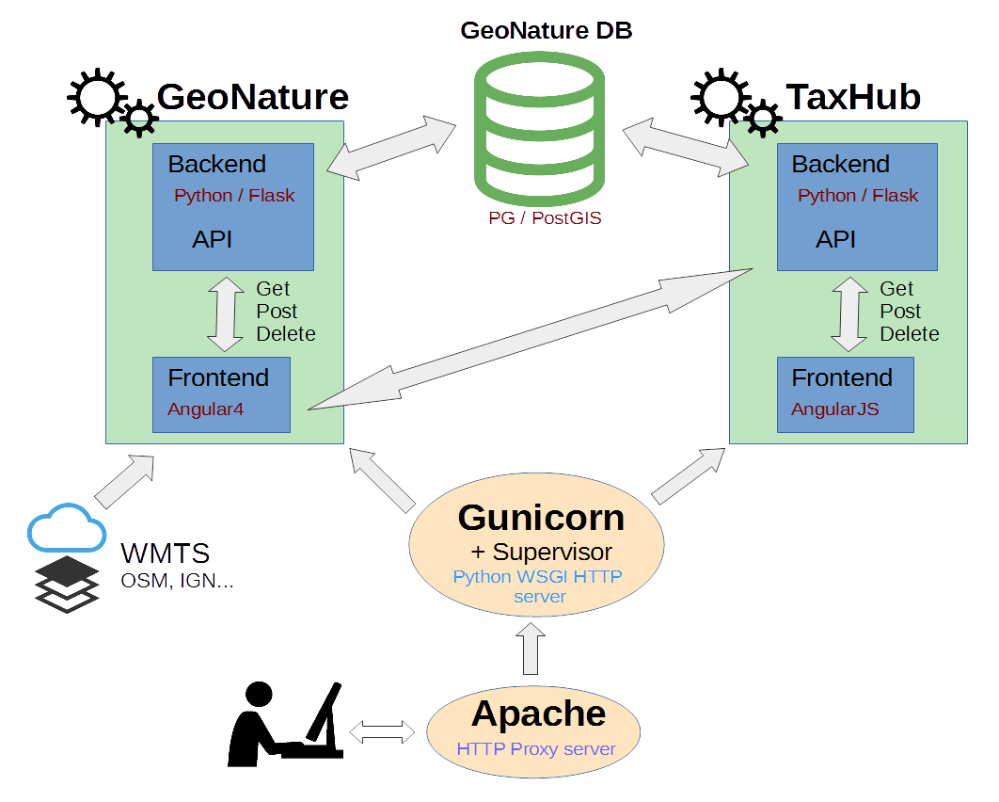
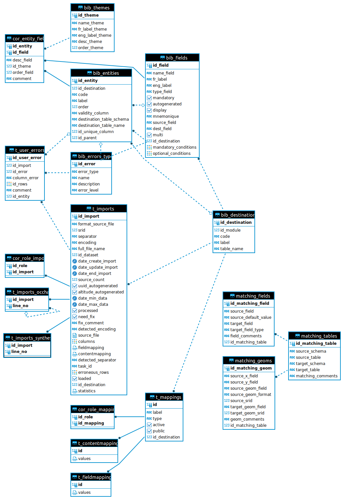

Manuel administrateur¶
Architecture¶
GeoNature possède une architecture modulaire et s’appuie sur plusieurs « services » indépendants pour fonctionner :
UsersHub et son sous-module d’authentification Flask (https://github.com/PnX-SI/UsersHub-authentification-module) sont utilisés pour gérer le schéma de BDD
ref_users(actuellement nomméutilisateurs) et l’authentification. UsersHub permet une gestion centralisée de ses utilisateurs (listes, organismes, applications), utilisable par les différentes applications de son système d’informations.TaxHub (https://github.com/PnX-SI/TaxHub) est utilisé pour la gestion du schéma de BDD
ref_taxonomy(actuellement nommétaxonomie). L’API de TaxHub est utilisée pour récupérer des informations sur les espèces et la taxonomie en général. TaxHub est intégré à GeoNature depuis sa version 2.15.Un sous-module Flask (https://github.com/PnX-SI/Nomenclature-api-module/) a été créé pour une gestion centralisée des nomenclatures (https://github.com/PnX-SI/Nomenclature-api-module/), il pilote le schéma
ref_nomenclature.ref_geoest le schéma de base de données qui gère le référentiel géographique. Il est utilisé pour gérer les zonages, les communes, le MNT, le calcul automatique d’altitude et les intersections spatiales.
GeoNature a également une séparation claire entre le backend (API: intéraction avec la base de données) et le frontend (interface utilisateur). Le backend peut être considéré comme un « service » dont se sert le frontend pour récupérer ou poster des données. NB : Le backend et le frontend se lancent séparément dans GeoNature.
Base de données¶
Dans la continuité de sa version 1, GeoNature V2 utilise le SGBD PostgreSQL et sa cartouche spatiale PostGIS. Cependant l’architecture du modèle de données a été complétement revue.
La base de données a notamment été refondue pour s’appuyer au maximum sur des standards, comme le standard d’Occurrences de taxons du SINP (Voir http://standards-sinp.mnhn.fr/category/standards/occurrences-de-taxons/).
La base de données a également été traduite en Anglais et supporte désormais le multilangue.
Les préfixes des schémas de BDD sont désormais standardisés : ref_ concerne les référentiels externes, gn_ concerne les schémas du coeur de GeoNature et pr_ les schémas des protocoles.
Autres standards :
Noms de tables, commentaires et fonctions en anglais
Pas de nom de table dans les noms de champs
Nom de schema éventuellement dans nom de table
Schéma simplifié de la BDD :

En jaune, les schémas des réferentiels.
En rose, les schémas du coeur de GeoNature
En bleu, les schémas des protocoles et sources de données
En vert, les schémas des applications pouvant interagir avec le coeur de GeoNature
Depuis la version 2.0.0-rc.4, il faut noter que les permissions (CRUVED) ont été retirées du schéma utilisateurs (ref_users) de UsersHub pour l’intégrer dans GeoNature dans un schéma gn_permissions, à ajouter en rose.
Modèle simplifié de la BDD (2017-12-15) :

Dernière version complète de la base de données (GeoNature 2.1 / 2019-08) :

Les relations complexes entre les schémas ont été grisées pour faciliter la lisibilité.
Administration avec Alembic¶
À partir de la version 2.7.5 de GeoNature, la gestion du schéma de la base de données se fait avec l’outil Alembic.
Celui-ci fonctionne grâce à des fichiers de migration qui sont appliqués de manière atomique (via une transaction) à la base de données, leur application étant enregistré dans la table public.alembic_version permettant en chaque instant de savoir dans quel état la base de données se trouve.
Les fichiers de migrations de GeoNature se trouve dans le dossier backend/geonature/migrations/versions/.
Il est possible pour n’importe quelle dépendance ou module GeoNature de fournir également des fichiers de migrations. Pour que ceux-ci soient détectés par Alembic, il suffira de définir un point d’entrée dans le setup.py de la dépendance ou du module concerné :
setuptools.setup(
…,
entry_points={
'alembic': [
'migrations = my_module:migrations',
],
},
…
)
Il est également possible de spécifier l’emplacement de révisions Alembic manuellement dans la configuration de GeoNature. Cela est nécessaire entre autre pour UsersHub afin de pouvoir manipuler son schéma alors que UsersHub n’est usuellement pas installé dans le venv de GeoNature (seul UsersHub-authentification-module l’est) :
[ALEMBIC]
VERSION_LOCATIONS = '/path/to/usershub/app/migrations/versions'
Chaque fichier de migration est caractérisé par :
un identifiant, e.g.
f06cc80cc8baune branche : Les branches permettent de séparer les fichiers de migrations afin de pouvoir les appliquer séparément. Par exemple, pour un déploiement de TaxHub sans GeoNature, il peut être intéressant de créer le schéma
taxonomiesans créer les schémas de GeoNature, et ainsi gérer indépendamment les migrations de chaque schéma.un ancêtre : Lorsqu’un fichier de migration représente l’évolution d’un état antérieur de la base de données, l’ancêtre indique dans quelle version la base de données doit se trouver avant d’appliquer le-dis fichier de migration.
des dépendances : Il est possible d’indiquer qu’une migration nécessite qu’une ou plusieurs autres migrations aient été préalablement appliquées. Par exemple, ceci permet d’indiquer que le schéma de GeoNature nécessite les schémas
taxonomieetutilisateurs.
Les commandes Alembic sont disponibles grâce à la sous-commande db de la commande geonature :
geonature db --help
Les deux sous-commandes status et autoupgrade sont spécifiques à GeoNature afin d’aider à l’utilisation d’Alembic.
La commande status permet de visualiser les branches et l’ensemble de leurs révisions.
Pour chaque révision est indiqué si celle-ci est appliquée à la base de données.
Si une branche a au moins sa première révision d’appliquée, alors un petit symbole indique si cette branche est à jour, c’est-à-dire si toutes les révisions de la branche ont été appliquées (✓) ou si la branche est en retard, c’est-à-dire que celle-ci contient des révisions qui ne sont pas encore appliquées à la base de données (×).
[geonature ✓]
[x] ┰ f06cc80cc8ba geonature schemas 2.7.5
[x] ┃ c0fdf2ee7f4f auto update cor_area_synthese
[x] ┃ 7077aa76da3d bump dependencies
[x] ┃ 2a2e5c519fd1 fix gn_synthese.get_default_nomenclature_value
[x] ┃ 5f4c4b644844 delete cascade on cor_dataset_territory and cor_dataset_protocol
[x] ┃ 2aa558b1be3a add schema gn_profiles
[x] ┃ 1eb624249f2b add default value in additionalFields bib
[x] ┃ 7471f51011c8 change index_vm_valid_profiles_cd_ref to unique index
[x] ┃ 9a9f4971edcd fix altitude trigger
[x] ┃ 6f7d5549d49e delete view v_synthese_validation_forwebapp
[x] ┣┓ dde31e76ce45 remove old profile function
[x] ┃ 61e46813d621 Update synthese sensitivity
[x] ┃ dfec5f64ac73 Fix sensitivity algorithm
[x] ┃ ac08dcf3f27b Do not auto-compute diffusion_level
[x] ┃ 30edd97ae582 Remove gn_export.t_config_exports
[x] ┗┛ 1dbc45309d6e Merge sensitivity
[geonature-samples ✓]
[x] ─ 3d0bf4ee67d1 geonature samples
[habitats ✓]
[x] ─ 62e63cd6135d create ref_habitats schema
[habitats_inpn_data ✓]
[x] ┰ 46e91e738845 insert inpn data in ref_habitats schema
[x] ┸ 805442837a68 correction on habref data
[ign_bd_alti ✓]
[x] ─ 1715cf31a75d Insert default French DEM (IGN 250m BD alti)
[ign_bd_alti_vector]
[ ] ─ 87651375c2e8 Vectorize French DEM
[nomenclatures ✓]
[x] ┰ 6015397d686a create ref_nomenclature schema 1.3.9
[x] ┃ 11e7741319fd fix ref_nomenclatures.get_default_nomenclature_value
[x] ┃ f8c2c8482419 fix ref_nomenclatures.get_default_nomenclature_value
[x] ┸ b820c66d8daa fix ref_nomenclatures.get_nomenclature_label
[nomenclatures_inpn_data ✓]
[x] ─ 96a713739fdd insert inpn data in ref_nomenclatures
[nomenclatures_taxonomie ✓]
[x] ─ f5436084bf17 add support for taxonomy into ref_nomenclatures
[nomenclatures_taxonomie_inpn_data ✓]
[x] ─ a763fb554ff2 insert taxonomic inpn data in ref_nomenclatures
[occhab ✓]
[x] ─ 2984569d5df6 create occhab schema
[occhab-samples]
[ ] ─ 21f661247023 insert occhab sample data
[occtax ✓]
[x] ┰ 29c199e07eaa create occtax schema
[x] ┃ addb71d8efad create occtax export view
[x] ┃ f57107d2d0ad fix get_default_nomenclature_value
[x] ┃ 494cb2245a43 trigger comportement
[x] ┸ 944072911ff7 update synthese data (bug occtax trigger)
[occtax-samples ✓]
[x] ─ cce08a64eb4f insert occtax sample data
[occtax-samples-test]
[ ] ─ 2a0ab7644e1c occtax sample test
[ref_geo ✓]
[x] ┰ 6afe74833ed0 ref_geo schema
[x] ┃ e0ac4c9f5c0a add indexes on FK referencing l_areas.id_area
[x] ┸ 4882d6141a41 add regions in area types
[ref_geo_fr_departments ✓]
[x] ─ 3fdaa1805575 Insert French departments in ref_geo
[ref_geo_fr_municipalities ✓]
[x] ─ 0dfdbfbccd63 Insert French municipalities in ref_geo
[ref_geo_fr_regions ✓]
[x] ─ d02f4563bebe Insert French regions in ref_geo
[ref_geo_fr_regions_1970 ✓]
[x] ─ 05a0ae652c13 Insert French regions 1970-2016 in ref_geo
[ref_geo_inpn_grids_1 ✓]
[x] ─ 586613e2faeb Insert INPN 1×1 grids in ref_geo
[ref_geo_inpn_grids_10 ✓]
[x] ─ ede150d9afd9 Insert INPN 10×10 grids in ref_geo
[ref_geo_inpn_grids_5 ✓]
[x] ─ 7d6e98441e4c Insert INPN 5×5 grids in ref_geo
[ref_sensitivity_inpn ✓]
[x] ─ 7dfd0a813f86 Insert INPN rules in sensitivity referential
[sql_utils ✓]
[x] ─ 3842a6d800a0 Add public shared functions
[taxhub ✓]
[x] ─ fa5a90853c45 taxhub
[taxhub-admin ✓]
[x] ─ 3fe8c07741be taxhub
[taxonomie ✓]
[x] ┰ 9c2c0254aadc create taxonomie schema version 1.8.1
[x] ┃ 7540702c6407 cd_ref utility functions
[x] ┃ 98035939bc0d find_all_taxons_parents
[x] ┃ c93cbb35cfe4 set default value for id_liste
[x] ┸ 4fb7e197d241 create taxonomie.v_bdc_status view
[taxonomie_attributes_example]
[ ] ─ aa7533601e41 add attributes exemple to taxonomie
[taxonomie_inpn_data ✓]
[x] ─ f61f95136ec3 insert inpn data in taxonomie schema
[taxonomie_taxons_example]
[ ] ─ 8222017dc3f6 add taxons exemple to taxonomie
[usershub ✓]
[x] ┰ 9445a69f2bed UsersHub
[x] ┸ 6ec215fe023e upgrade utilisateurs schema
[usershub-samples ✓]
[x] ─ f63a8f44c969 UsersHub samples data
[utilisateurs ✓]
[x] ┰ fa35dfe5ff27 utilisateurs schema 1.4.7 (usershub 2.1.3)
[x] ┃ 830cc8f4daef add additional_data field to bib_organismes
[x] ┃ 5b334b77f5f5 fix v_roleslist_forall_applications
[x] ┃ 951b8270a1cf add unique constraint on bib_organismes.uuid_organisme
[x] ┸ 10e87bc144cd get_id_role_by_name()
[utilisateurs-samples ✓]
[x] ─ 72f227e37bdf utilisateurs sample data
La commande autoupgrade permet de mettre automatiquement à jour toutes les branches dont au moins une révision est appliquée lorsque celles-ci possèdent une ou plusieurs révisions non appliquées.
Cette commande est appelée par le script migration.sh lors d’une mise à jour de la base de données.
Elle accepte également les paramètres -x qui sont alors fournis à la commande upgrade lorsque appelée sur chaque branche en retard.
La commande heads permet de lister l’ensemble des branches disponibles, ainsi que la dernière révision disponible pour chaque branche :
geonature db heads
e0ac4c9f5c0a (ref_geo) (effective head)
7077aa76da3d (geonature) (head)
586613e2faeb (ref_geo_inpn_grids_1) (head)
1715cf31a75d (ign_bd_alti) (effective head)
3d0bf4ee67d1 (geonature-samples) (head)
0dfdbfbccd63 (ref_geo_fr_municipalities) (head)
7d6e98441e4c (ref_geo_inpn_grids_5) (head)
87651375c2e8 (ign_bd_alti_vector) (head)
3fdaa1805575 (ref_geo_fr_departments) (effective head)
ede150d9afd9 (ref_geo_inpn_grids_10) (head)
3842a6d800a0 (sql_utils) (effective head)
951b8270a1cf (utilisateurs) (effective head)
72f227e37bdf (utilisateurs-samples) (effective head)
f5436084bf17 (nomenclatures_taxonomie) (effective head)
6015397d686a (nomenclatures) (effective head)
96a713739fdd (nomenclatures_inpn_data) (effective head)
a763fb554ff2 (nomenclatures_taxonomie_inpn_data) (effective head)
4fb7e197d241 (taxonomie) (effective head)
aa7533601e41 (taxonomie_attributes_example) (head)
3fe8c07741be (taxhub-admin) (head)
8222017dc3f6 (taxonomie_taxons_example) (head)
f61f95136ec3 (taxonomie_inpn_data) (effective head)
fa5a90853c45 (taxhub) (effective head)
46e91e738845 (habitats_inpn_data) (effective head)
62e63cd6135d (habitats) (effective head)
La commande history permet de lister l’ensemble de fichier de révisions. Il est également possible de lister les révisions devant être appliquées pour passer d’un état à un autre. Par exemple, voici la liste des révisions à appliquer pour passer d’une base de données vierge (base) à une base avec la branche nomenclatures_inpn_data à jour (head) :
geonature db history -r base:nomenclatures_inpn_data@head
<base> (6015397d686a) -> 96a713739fdd (nomenclatures_inpn_data) (effective head), insert inpn data in ref_nomenclatures
<base> (fa35dfe5ff27, 3842a6d800a0) -> 6015397d686a (nomenclatures) (effective head), create ref_nomenclature schema 1.3.9
<base> -> 3842a6d800a0 (sql_utils) (effective head), Add public shared functions
<base> -> fa35dfe5ff27 (utilisateurs), utilisateurs schema 1.4.7 (usershub 2.1.3)
Si vous avez déjà une base de données existante correspondant à une installation de GeoNature en version 2.7.5 et que vous passez à Alembic, vous pouvez l’indiquer grâce à la commande suivante :
geonature db stamp f06cc80cc8ba
Il est possible que votre base de données contienne quelques données supplémentaires (référentiel géographique des communes, …), qu’il faut donc indiquer à Alembic aussi. Reportez-vous aux notes de versions de la release 2.8.0 de GeoNature afin de consulter la liste des révisions à éventuellement « stamper ».
Vous pouvez demander à Alembic dans quel état se trouve votre base de données avec la commande current :
geonature db current
62e63cd6135d (effective head)
f06cc80cc8ba
3842a6d800a0 (effective head)
9c2c0254aadc
72f227e37bdf (effective head)
fa35dfe5ff27
6015397d686a (effective head)
6afe74833ed0
a763fb554ff2 (effective head)
f5436084bf17 (effective head)
46e91e738845 (effective head)
f61f95136ec3 (effective head)
96a713739fdd (effective head)
La liste obtenue contient, pour chaque branche, la dernière migration appliquée.
Notons toutefois que Alembic ne stocke pas l’ensemble de cette liste dans la table public.alembic_revision, mais se restreint uniquement aux migrations dont l’application ne peut être déduit des indications de dépendances.
Il est possible de n’afficher que les informations liées à une révision avec la commande show :
geonature db show f06cc80cc8ba
Rev: f06cc80cc8ba
Parent: <base>
Also depends on: 72f227e37bdf, a763fb554ff2, 46e91e738845, 6afe74833ed0
Branch names: geonature
Path: backend/geonature/migrations/versions/f06cc80cc8ba_2_7_5.py
geonature schemas 2.7.5
Revision ID: f06cc80cc8ba
Create Date: 2021-08-10 14:23:55.144250
L’absence de l’indication (head) à côté du numéro de révision indique qu’il ne s’agit pas de la dernière révision disponible pour la branche geonature.
Vous pouvez alors mettre à jour cette branche avec la commande upgrade :
geonature db upgrade geonature@head
Il est possible de monter des branches optionnelles pour, par exemple, bénéficier des mailles 10×10 dans son référentiel géographique :
geonature db upgrade ref_geo_inpn_grids_10@head -x data-directory=./tmp_geo
L’ensemble des branches disponibles est décrit dans la sous-section ci-après.
L’argument -x permet de fournir des variables à usage des fichiers de migrations. Dans le cas des migrations de données de zones géographiques, celles-ci supporte la variable data-directory permettant de spécifier où doivent être cherchées et éventuellement téléchargées les données géographiques. Si l’argument n’est pas spécifié, un dossier temporaire, supprimé à la fin de la procédure, sera utilisé.
Pour supprimer les mailles 10×10 de son référentiel géographique, on utilisera :
geonature db downgrade ref_geo_inpn_grids_10@base
Dans le cas d’une branche contenant plusieurs migrations, on pourra appliquer ou désappliquer chaque migration individuellement avec upgrade branch@+1 ou downgrade branch@-1. Il est également possible de référencer directement un numéro de migration.
Si l’on souhaite appliquer une migration manuellement, ou si l’on souhaite la modifier, il est possible de passer l’argument --sql aux commandes upgrade et downgrade afin de récupérer le code SQL de la migration. Cela ne fonctionne toutefois pas avec certaines migrations telles que les migrations de données géographiques, en raison d’import SQL nécessitant de manipuler directement le curseur SQLAlchemy.
Pour créer un nouveau fichier de migration afin d’y placer ses évolutions de la base de données, on utilisera la commande suivante :
geonature db revision -m "add table gn_commons.t_foo" --head geonature@head
Generating […]/backend/geonature/migrations/versions/31250092bce3_add_table_gn_commons_t_foo.py ... done
La documentation d’Alembic liste les opérations prises en charge.
Certaines opérations complexes telles que la création de trigger ne sont pas prévues, mais il reste toujours possible d’exécuter du SQL directement avec l’opérateur op.execute.
Description des branches¶
Cette section liste les branches Alembic disponibles et leur impact sur la base de données.
sql_utils: Fournit quelques fonctions SQl utilitaires dans le schémapublic. Fourni par Utils-Flask-SQLAlchemy.geonature: Créé les schémas propres à GeoNature (gn_commons,gn_synthese, …).geonature-samples: Insère quelques données d’exemple en base.taxonomie: Créé le schémataxonomie. Fournie par TaxHub.nomenclatures: Crée le schémaref_nomenclatures. Fourni par Nomenclature-api-module.nomenclatures_inpn_data: Insère le référentiel des nomenclatures de l’INPN en base. Fourni par Nomenclature-api-module.nomenclatures_taxonomie: Complète le schémaref_nomenclaturespour accueillir les nomenclatures liées à la taxonomie.nomenclatures_taxonomie_inpn_data: Insère les nomenclatures liées à la taxonomie en base.utilisateurs: Installe le schémautilisateurs. Fournie par UsersHub-authentification-module.utilisateurs-samples: Insère des données d’exemples (utilisateurs, groupes) dans le schémautilisateurs. Fourni par UsersHub-authentification-module.habitats: Créé le schémaref_habitats. Fourni par Habref-api-module.habitats_inpn_data: Insère le référentiel HABREF de l’INPN en base. Fourni par Habref-api-module.ref_geo: Créé le schémaref_geo. Fourni par RefGeo.
Si vous utilisez UsersHub, vous pouvez être intéressé par les branches suivantes :
usershub: Déclare l’application UsersHub dans la liste des applications. Fourni par UsersHub.usershub-samples: Associe le groupe « Grp_admin » issue des données d’exemple à l’application UsersHub et au profil « Administrateur » permettant aux utilisateurs du groupe de se connecter à UsersHub. Fourni par UsersHub.
Les branches ci-après sont totalement optionnelles :
ref_geo_inpn_grids_1: Insère les mailles 1×1 km (INPN) dans le référentiel géographique (type de zoneM1).ref_geo_inpn_grids_5: Insère les mailles 5×5 km (INPN) dans le référentiel géographique (type de zoneM5).ref_geo_inpn_grids_10: Insère les mailles 10×10 km (INPN) dans le référentiel géographique (type de zoneM10).ref_geo_fr_municipalities: Insère les communes françaises (IGN février 2020) dans le référentiel géographique (type de zoneCOM).ref_geo_fr_departments: Insère les départements français (IGN février 2020) dans le référentiel géographique (type de zoneDEP).ign_bd_alti: Insère le modèle numérique de terrain (MNT) de l’IGN en base.ign_bd_alti_vector: Vectorise le MNT.
Note : pour plusieurs fichiers de révision, notamment liés au référentiel géographique ou nécessitant des données INPN, il est nécessaire de télécharger des ressources externes. Il est possible d’enregistrer les données téléchargées (et ne pas les re-télécharger si elles sont déjà présentes) avec -x data-directory=… :
geonature db upgrade …@head -x data-directory=./data/
Gestion des droits¶
Accès à GeoNature et CRUVED¶
Les comptes des utilisateurs, leur mot de passe, email, groupes et leur accès à l’application GeoNature sont gérés de manière centralisée dans l’application UsersHub. Pour qu’un rôle (utilisateur ou groupe) ait accès à GeoNature, il faut lui attribuer un profil de « Lecteur » dans l’application GeoNature, grâce à l’application UsersHub qui va modifier la table utilisateurs.cor_role_app_profil.
La gestion des droits (permissions) des rôles, spécifique à GeoNature, est ensuite gérée dans un schéma (gn_permissions) depuis le module ADMIN de GeoNature. Voir https://docs.geonature.fr/user-manual.html#gestion-des-permissions.
La gestion des permissions dans GeoNature, comme dans beaucoup d’applications, est liée à des actions (Create / Read / Update / Delete aka CRUD). Pour les besoins métier de l’application, nous avons rajouté deux actions : « Exporter » et « Valider » (non utilisée), ce qui donne le CRUVED : Create / Read / Update / Validate / Export / Delete.
Chaque module peut utiliser toutes ou certaines de ces actions.
Selon les modules, on peut appliquer des filtres sur ces actions. Notamment des filtres d’appartenance (portée / scope) :
Portée 1 = Seulement mes données. Cela concerne les données sur lesquels je suis :
observateur
personne ayant effectuée la saisie de la donnée
personnellement acteur du jeu de données de la donnée
personne ayant saisi le JDD de la donnée
Portée 2 = Les données de mon organisme. Portée 1 + :
les données sur lesquelles mon organisme est acteur du JDD de la donnée
Exemple :
Utilisateur 1 peut effectuer l’action « DELETE » sur « SES DONNEES »
Utilisateur Admin peut effectuer l’action « UPDATE » sur « TOUTES LES DONNEES » (sans filtre d’appartenance)
Ces permissions sont attribuées module par module, et éventuellement sur des objets de certains modules.
Cas particulier de l’action « C »¶
Permissions d’administrateur¶
Chaque module (ou sous-module) définit ses permissions disponibles lors de son installation. Cependant une fois installé, aucun utilisateur n’a de permission sur un nouveau module. Il faut les définir explicitement.
Une commande dédiée permet d’ajouter toutes les permissions sur tous les modules à un groupe ou utilisateur ayant le rôle d’administrateur. Cette commande peut être relancée après l’installation d’un nouveau module :
# changer "Grp_Admin" par le nom de votre groupe d'administrateur si vous l'avez changé
geonature permissions supergrant --group --nom "Grp_admin"
Récapitulatif¶
Dans GeoNature on peut attribuer à un role des actions possibles dans un module, sur lesquels on peut ajouter des filtres (définis dans la table
gn_permissions.t_permissions).6 actions sont possibles dans GeoNature : Create / Read / Update / Validate / Export / Delete (aka CRUVED).
Différents types de filtre existent. Le plus courant est le filtre d’appartenance (portée) : 2 filtres d’appartenance sont attribuables à des actions : Mes données / Les données de mon organisme. La synthèse dispose aussi d’un filtre de sensibilité.
Des fonctions PostgreSQL ont aussi été intégrées pour faciliter la récupération de ces informations (
gn_permissions.cruved_for_user_in_module,gn_permissions.does_user_have_scope_permission, …)Si un utilisateur n’a aucune permission sur un module, alors il ne lui sera pas affiché dans le menu latéral et il ne pourra pas y accéder
Il est aussi possible de ne pas utiliser UsersHub pour gérer les utilisateurs et de connecter GeoNature à un CAS (voir configuration). Actuellement ce paramétrage est fonctionnel en se connectant au CAS de l’INPN (MNHN)
A noter que toutes les actions et tous les filtres n’ont pas été implémentées dans tous les modules. Elles le sont en fonction des besoins de chaque module. Chaque module définit la liste de ses permissions disponibles (actions et filtres).
Nomenclatures¶
Toutes les valeurs des listes déroulantes sont gérées dans une table générique
ref_nomenclatures.t_nomenclaturesElles s’appuient sur les nomenclatures du SINP (http://standards-sinp.mnhn.fr/nomenclature/) qui peuvent être désactivées ou completées
Chaque nomenclature est associée à un type (
ref_nomenclatures.bib_nomenclatures_types), et une vue par type de nomenclature a été ajoutée pour simplifier leur usageCes nomenclatures sont gérées dans un sous-module pour pouvoir les réutiliser (ainsi que leur mécanisme) dans d’autres applications : https://github.com/PnX-SI/Nomenclature-api-module/
Les identifiants des nomenclatures et des types de nomenclature sont des serials (entiers auto-incrémentés) et ne sont pas prédéfinis lors de l’installation, ni utilisées en dur dans le code des applications. En effet, les nomenclatures peuvent varier en fonction des structures. On utilise le
cd_nomenclatureet lemnémoniquedu type de nomenclature pour retrouver dynamiquement l”id_nomenclatured’une nomenclature. C’est cependant cet identifiant qu’on stocke au niveau des données pour garantir l’intégrité référentielleChaque nomenclature peut être associée à un règne ou un group2inpn (
ref_nomenclatures.cor_taxref_nomenclature) pour proposer des nomenclatures correspondants à un taxonIl est possible de désactiver des nomenclatures en passant la valeur de la colonne
activeen false.Les valeurs par défaut sont définies dans chaque module
Pour Occtax c’est dans
pr_occtax.defaults_nomenclatures_value. Elles peuvent être définies pour chaque type de nomenclature ainsi que par organisme, règne et/ou group2inpnSi organisme = 0 alors la valeur par défaut s’applique à tous les organismes. Idem pour les règnes et group2inpn
La fonction
pr_occtax.get_default_nomenclature_valuepermet de renvoyer l’id de la nomenclature par défautCes valeurs par défaut sont aussi utilisées pour certains champs qui sont cachés (statut_observation, floutage, statut_validation…) mais ne sont donc pas modifiables par l’utilisateur
Il existe aussi une table pour définir des valeurs par défaut générales de nomenclature (
ref_nomenclatures.defaults_nomenclatures_value)Elles peuvent être administrées dans le module Admin de GeoNature.
Métadonnées¶
Elles sont gérées dans le schéma
gn_metabasé sur le standard Métadonnées du SINP (http://standards-sinp.mnhn.fr/category/standards/metadonnees/).Elles permettent de gérer des jeux de données, des cadres d’acquisition, des acteurs (propriétaire, financeur, producteur…) et des protocoles.
Elles peuvent être administrées dans le module Métadonnées de GeoNature.
Les acteurs sont quant à eux gérés dans la table
utilisateurs.bib_organismeset donc paramétrables dans UsersHub.
Données SIG¶
Le schéma
ref_geopermet de gérer les données SIG (zonages, communes, MNT…) de manière centralisée, potentiellement partagé avec d’autres BDDIl contient une table des zonages, des types de zonages, des communes, des grilles (mailles) et un MNT raster ou vectorisé (https://github.com/PnX-SI/GeoNature/issues/235)
La fonction
ref_geo.fct_get_area_intersectionpermet de renvoyer les zonages intersectés par une observation en fournissant sa géométrieLa fonction
ref_geo.fct_get_altitude_intersectionpermet de renvoyer l’altitude min et max d’une observation en fournissant sa géométrieLes intersections d’une observation avec les zonages sont stockées au niveau de la synthèse (
gn_synthese.cor_area_synthese) et non au niveau de la donnée source pour alléger et simplifier leur gestion
Profils de taxons¶
Introduction¶
GeoNature dispose d’un mécanisme permettant de calculer des profils pour chaque taxon en se basant sur les données validées présentes dans la Synthèse de l’instance.
Ces profils sont stockés dans un schéma dédié gn_profiles, et plus précisément dans les deux vues matérialisées suivantes :
La vue matérialisée
gn_profiles.vm_valid_profilescomporte des informations générales sur chaque taxon :
L’aire d’occurrences
Les altitudes extrêmes d’observation du taxon
Les dates de première et de dernière observation
Le nombre de données valides pour le taxon considéré
La vue matérialisée
gn_profiles.vm_cor_taxon_phenologycomporte les « combinaisons » d’informations relatives à la phénologie des taxons (voir détail des calculs ci-dessous) :
La période d’observation
Le stade de vie (activable ou non)
Les altitudes min et max
Les altitudes « fiables » en écartant les valeurs extrêmes
Le nombre de données correspondant à cette « combinaison phénologique »
La fonction gn_profiles.refresh_profiles() permet de rafraichir ces vues matérialisées.
Pour lancer manuellement cette fonction, ouvrez une console SQL et exécutez la requête SELECT gn_profiles.refresh_profiles();.
Cette fonction est aussi diponible en tant que fonction GeoNature qu’il est préférable d’utiliser : geonature profiles update
Pour automatiser l’exécution de cette fonction (tous les jours à minuit dans cet exemple), créer une tâche planfiée.
Usage¶
Pour chaque taxon (cd_ref) disposant de données dans la vue gn_profiles.v_synthese_for_profiles (vue filtrée basée sur la synthèse de l’instance), un profil est généré. Il comporte l’aire d’occurrence, les limites altitudinales et les combinaisons phénologiques jugées cohérentes sur la base des données disponibles.
Ces profils sont déclinés sur :
Le module Validation permet d’attirer l’attention des validateurs sur les données qui sortent du « cadre » déjà connu pour le taxon considéré, et d’apporter des éléments de contexte en complément de la donnée en cours de validation
Le module Synthèse (fiche d’information, onglet validation) permet d’apporter des éléments de contexte en complément des données brutes consultées
Le module Occtax permet d’alerter les utilisateurs lors de la saisie de données qui sortent du « cadre » déjà connu pour un taxon considéré
Le processus de validation automatique permet de valider automatiquement les observations respectant le profil de taxons (non activé par défaut).


Plusieurs fonctions permettent de vérifier si une donnée de la synthèse est cohérente au regard du profil du taxon en question :
gn_profiles.check_profile_distribution: permet de vérifier si la donnée testée est totalement incluse dans l’aire d’occurrences déjà connue pour son taxon.gn_profiles.check_profile_phenology: permet de vérifier si la phénologie d’une donnée (période, stade de vie, altitudes) est une combinaison déjà connue dans le profil du taxongn_profiles.check_profile_altitudes: permet de vérifier si une donnée est bien située dans la fourchette d’altitudes connue pour le taxon en question
Configuration et paramétrage¶
Paramètres de calcul des profils :
Le calcul des profils de taxons repose sur plusieurs variables, paramétrables soit pour tout le mécanisme, soit pour des taxons donnés.
Les paramètres généraux dans la table gn_profiles.t_parameters :
Le paramètre
id_valid_status_for_profiles: permet de lister lesid_nomenclaturesdes statuts de validation à prendre en compte pour les calculs des profils. Par exemple, en ne listant que les identifiants des nomenclatures « Certain -très probable » et « Probable », seules ces données valides seront prises en compte lors du calcul des profils (comportement par défaut). En listant tous les identifiants des nomenclatures des statuts de validation, l’ensemble des données alimenteront les profils de taxons.Le paramètre
id_rang_for_profiles: permet de lister lesid_rangde Taxref à prendre en compte pour les calculs des profils. Par défaut, les profils ne sont calculés que pour les cd_ref correspondant à des Genres, Espèces et Sous-espèces.Le paramètre
proportion_kept_datadéfinit le pourcentage de données à conserver lors du calcul des altitudes valides (gn_profiles.vm_cor_taxon_phenology), en retirant ainsi les extrêmes. Ce paramètre, définit à 95% par défaut, doit être compris entre 51 et 100% (voir détails ci-après).
Les deux premiers paramètres permettent de filtrer les données dans la vue gn_profiles.v_synthese_for_profiles. Cette vue comporte les données de la synthèse qui répondent aux paramètres et qui alimenteront les profils de taxons. Les clauses WHERE de cette vue peuvent être adaptées pour filtrer les données sur davantage de critères et répondre aux besoins plus spécifiques, mais sa structure doit rester inchangée.
Les paramètres définis par taxon le sont dans la table gn_profiles.cor_taxons_parameters :
Les profils peuvent être calculés avec des règles différentes en fonction des taxons. Ceux-ci sont définis au niveau du cd_nom, à n’importe quel rang (espèce, famille, règne etc). Ils seront appliqués de manière récursive à tous les taxons situés « sous » le cd_ref paramétré.
Dans le cas où un taxon hérite de plusieurs règles (une définie pour son ordre et une autre définie pour sa famille par exemple), les paramètres définis au plus proche du taxon considéré seront pris en compte.
Par exemple, s’il existe des paramètres pour le phylum « Animalia » (cd_nom 183716) et d’autres pour le renard (cd_nom 60585), les paramètres du renard seront appliqués en priorité pour cette espèce, mais les paramètres Animalia s’appliqueront à tous les autres animaux.
Les règles appliquables à chaque taxon sont récupérées par la fonction gn_profiles.get_parameters(cdnom).
Pour chaque cd_nom, il est ainsi possible de définir les paramètres suivants :
spatial_precision: La précision spatiale utilisée pour calculer les profils. Elle est exprimée selon l’unité de mesure de la projection locale de l’instance GeoNature : mètres pour le Lambert93, degré pour le WGS84 etc. Elle définit à la fois la taille de la zone tampon appliquée autour de chaque observation pour définir l’aire d’occurrences du taxon, ainsi que la distance maximale admise entre le centroïde et les limites d’une observation pour qu’elle soit prise en compte lors du calcul des profils (évite qu’une donnée imprécise valide à elle seule une grande zone).temporal_precision_days: La précision temporelle en jours utilisée pour calculer les profils. Elle définit à la fois le pas de temps avec lequel la phénologie est calculée, ainsi que la précision temporelle minimale requise (différence entre date début et date fin de l’observation) pour qu’une donnée soit prise en compte dans le calcul des profils. Une précision de 365 jours ou plus permettra de ne pas tenir compte de la période (toutes les données seront dans une unique période de l’année).active_life_stage: Définit si le stade de vie doit être pris en compte ou non lors du calcul des profils.
Par défaut, une précision spatiale de 2000m et une précision temporelle de 10j (décade) sont paramétrés pour tous les phylums, sans tenir compte des stades de vie.
A terme, d’autres variables pourront compléter ces profils : habitats (habref) ou comportement (nidification, reproduction, migration…) notamment.
Configuration - Activer/désactiver les profils :
Il est possible de désactiver l’ensemble des fonctionnalités liées aux profils dans l’interface, en utilisant le paramètre suivant dans le fichier geonature/config/geonature_config.toml
[FRONTEND]
ENABLE_PROFILES = true/false
Calcul des phénologies¶
Pour chaque taxon, la phénologie est calculée en croisant dans un premier temps les périodes d’observations et, selon les paramètres, les stades de vie.
Pour chacune des combinaisons obtenues (période x stade de vie), sont alors calculées :
L’altitude minimale (toutes données comprises)
L’altitude maximale (toutes données comprises)
L’altitude minimale fiable (en retirant x% de données extrêmes selon le paramètre
proportion_kept_data)L’altitude maximale fiable (en retirant x% de données extrêmes selon le paramètre
proportion_kept_data)Le nombre de données valides correspondantes
Exclusion des données extrêmes
Afin que des données exceptionnelles, bien que valides, ne soient pas considérées comme une « norme », les profils permettent d’exclure un certain pourcentage de données extrêmes. Pour ce faire :
Le nombre de données exclues est systématiquement arrondi à l’entier supérieur, pour les extrêmes « bas » et les extrêmes « hauts »
Aucune altitude fiable n’est calculée s’il y a davantage de données exclues que de données conservées
Le paramètre
proportion_kept_datadoit donc être compris entre 51 et 100% : en dessous de 50%, le nombre de données supprimées est supérieur au nombre de données conservées, aucune altitude fiable ne sera calculée. Si le paramètre est à 100%, les altitudes fiables seront identiques aux altitudes extrêmes observées pour la période (et le stade) donnés
Il faut donc (1/[1- proportion_kept_data /100])+1 données pour que des altitudes fiables soient calculées, soit :
101 données minimum par période/stade si
proportion_kept_data=9951 données minimum par période/stade si
proportion_kept_data=9821 données minimum par période/stade si
proportion_kept_data=9511 données minimum par période/stade si
proportion_kept_data=903 données minimum par période/stade si
proportion_kept_data=51
Fonctions¶
La base de données contient de nombreuses fonctions.
gn_synthese
Fonction |
Paramètres |
Résultat |
Description |
|---|---|---|---|
get_default_nomenclature_value |
id_type_nomenclature, idorganism, regne, group2inpn |
Entier |
Function that return the default nomenclature id with a nomenclature type, organism id, regne, group2_inpn |
fct_trig_insert_in_cor_area_synthese |
geom |
Trigger |
Trigger intersectant la géométrie d’une observation avec tous les zonages |
ref_geo
ref_geo.fct_get_altitude_intersection(IN mygeom geometry)
-- Fonction qui retourne l'altitude min et max de la géométrie passée en paramètre
ref_geo.fct_get_area_intersection(
IN mygeom geometry,
IN myidtype integer DEFAULT NULL::integer)
RETURNS TABLE(id_area integer, id_type integer, area_code character varying, area_name character varying)
-- Fonction qui retourne un tableau des zonages (id_area) intersectant la géométrie passée en paramètre
ref_geo.get_id_area_type(mytype character varying) RETURNS integer
--Function which return the id_type_area from the type_code of an area type
pr_occtax
pr_occtax.get_id_counting_from_id_releve(my_id_releve integer) RETURNS integer[]
-- Function which return the id_countings in an array (table pr_occtax.cor_counting_occtax) from the id_releve(integer)
get_default_nomenclature_value(mytype character varying, myidorganism integer DEFAULT 0, myregne character varying(20) DEFAULT '0', mygroup2inpn character varying(255) DEFAULT '0') RETURNS integer
--Function that return the default nomenclature id with wanteds nomenclature type, organism id, regne, group2_inp --Return -1 if nothing matche with given parameters
pr_occtax.insert_in_synthese(my_id_counting integer) RETURNS integer[]
ref_nomenclatures
get_id_nomenclature_type(mytype character varying) RETURNS integer
--Function which return the id_type from the mnemonique of a nomenclature type
get_default_nomenclature_value(mytype character varying, myidorganism integer DEFAULT 0) RETURNS integer
--Function that return the default nomenclature id with wanteds nomenclature type (mnemonique), organism id
--Return -1 if nothing matche with given parameters
check_nomenclature_type_by_mnemonique(id integer , mytype character varying) RETURNS boolean
--Function that checks if an id_nomenclature matches with wanted nomenclature type (use mnemonique type)
check_nomenclature_type_by_cd_nomenclature(mycdnomenclature character varying , mytype character varying)
--Function that checks if an id_nomenclature matches with wanted nomenclature type (use mnemonique type)
check_nomenclature_type_by_id(id integer, myidtype integer) RETURNS boolean
--Function that checks if an id_nomenclature matches with wanted nomenclature type (use id_type)
get_id_nomenclature(
mytype character varying,
mycdnomenclature character varying)
RETURNS integer
--Function which return the id_nomenclature from an mnemonique_type and an cd_nomenclature
get_nomenclature_label(
myidnomenclature integer,
mylanguage character varying
)
RETURNS character varying
--Function which return the label from the id_nomenclature and the language
get_cd_nomenclature(myidnomenclature integer) RETURNS character varying
--Function which return the cd_nomenclature from an id_nomenclature
get_filtered_nomenclature(mytype character varying, myregne character varying, mygroup character varying)
RETURNS SETOF integer
--Function that returns a list of id_nomenclature depending on regne and/or group2_inpn sent with parameters.
calculate_sensitivity(
mycdnom integer,
mynomenclatureid integer)
RETURNS integer
--Function to return id_nomenclature depending on observation sensitivity
--USAGE : SELECT ref_nomenclatures.calculate_sensitivity(240,21);
gn_profiles
gn_profiles.get_parameters(mycdnom integer)
RETURNS TABLE(cd_ref integer, spatial_precision integer, temporal_precision_days integer, active_life_stage boolean, distance smallint)
-- fonction permettant de récupérer les paramètres les plus adaptés
-- (définis au plus proche du taxon) pour calculer le profil d'un taxon donné
-- par exemple, s'il existe des paramètres pour les "Animalia" des paramètres pour le renard,
-- les paramètres du renard surcoucheront les paramètres Animalia pour cette espèce
gn_profiles.check_profile_distribution(
in_geom geometry,
profil_geom geometry
)
RETURNS boolean
--fonction permettant de vérifier la cohérence d'une donnée d'occurrence en s'assurant que sa localisation est totalement incluse dans l'aire d'occurrences valide définie par le profil du taxon en question
gn_profiles.check_profile_phenology(
in_cd_ref integer,
in_date_min date,
in_date_max date,
in_altitude_min integer,
in_altitude_max integer,
in_id_nomenclature_life_stage integer,
check_life_stage boolean
)
RETURNS boolean
--fonction permettant de vérifier la cohérence d'une donnée d'occurrence en s'assurant que sa phénologie (dates, altitude, stade de vie selon les paramètres) correspond bien à la phénologie valide définie par le profil du taxon en question
--La fonction renvoie 'false' pour les données trop imprécises (durée d'observation supérieure à la précision temporelle définie dans les paramètres des profils).
gn_profiles.check_profile_altitudes(
in_alt_min integer,
in_alt_max integer,
profil_altitude_min integer,
profil_altitude_max integer
)
RETURNS boolean
--fonction permettant de vérifier la cohérence d'une donnée d'occurrence en s'assurant que son altitude se trouve entièrement comprise dans la fourchette altitudinale valide du taxon en question
Tables transversales¶
GeoNature contient aussi des tables de stockage transversales qui peuvent être utilisées par tous les modules. C’est le cas pour la validation, la sensibilité, l’historisation des modifications et les médias.
Cela permet de ne pas avoir à mettre en place des tables et mécanismes dans chaque module, mais de s’appuyer sur un stockage, des fonctions et développements factorisés, centralisés et partagés.
Ces tables utilisent notamment le mécanisme des UUID (identifiant unique) pour retrouver les enregistrements. Depuis une table source (Occtax ou un autre module) on peut retrouver les enregistrements stockées dans les tables transversales en utilisant un WHERE <TABLE_TRANSVERSALE>.uuid_attached_row = <MON_UUID_SOURCE> et ainsi retrouver l’historique de validation, les médias ou encore la sensibilité associés à une donnée.
Triggers vers la synthèse¶
Voir ceux mis en place de Occtax vers Synthèse.
Cheminement d’une donnée Occtax :
Formulaire Occtax
Ecriture dans la table
cor_counting_occtaxet génération d’un nouvel UUIDTrigger d’écriture dans la table verticale
t_validationsà partir de la valeur par défaut de la nomenclature de validation (gn_common.ref_nomenclatures.defaults_nomenclatures_value)Trigger d’écriture d’Occtax vers la synthèse (on ne maitrise pas l’ordre de ces 2 triggers qui sont lancés en même temps)
Trigger de rapatriement du dernier statut de validation de la table verticale vers la synthèse.
Triggers dans la synthèse¶
Version 2.1.0 de GeoNature

Table : synthese
Table contenant l’ensemble des données. Respecte le standard Occurrence de taxon du SINP.
tri_meta_dates_change_synthese
BEFORE INSERT OR UPDATE
Mise à jour des champs
meta_create_dateetmeta_update_date
tri_insert_cor_area_synthese
AFTER INSERT OR UPDATE OF the_geom_local
Mise à jour de la table
cor_area_syntheseActions :
Si update : suppression des enregistrements de la table
gn_synthese.cor_area_syntheseavec l’id_synthese concernéInsertion des id_areas intersectant la géométrie de la synthèse dans
gn_synthese.cor_area_synthese. Prise en compte de toutes les aires qu’elles soient ou non actives. Manque enable = true
tri_del_area_synt_maj_corarea_tax
BEFORE DELETE
Mise à jour des tables
cor_area_taxonetcor_area_syntheseActions :
Récupération de l’ensemble des aires intersectant la donnée de synthèse
Suppression des enregistrement de
cor_area_taxonavec le cd_nom et les aires concernésInsertion dans
cor_area_taxonrecalculant les max, nb_obs et couleur pour chaque aire pour l’ensemble des données avec les aires concernées et le cd_nom concerné ne correspondant pas à la donnée suppriméeSuppression des enregistrements de
gn_synthese.cor_area_synthese
tri_update_cor_area_taxon_update_cd_nom
AFTER UPDATE OF cd_nom
Mise à jour de la table cor_area_taxon
Actions :
Récupération de l’ensemble des aires intersectant la donnée de synthèse
Recalcul
cor_area_taxonpour l’ancien cd_nom via fonctiongn_synthese.delete_and_insert_area_taxonRecalcul
cor_area_taxonpour le nouveau cd_nom via fonctiongn_synthese.delete_and_insert_area_taxon
Table : cor_area_synthese
Table contenant l’ensemble des id_areas intersectant les enregistrements de la synthèse
tri_maj_cor_area_taxon
AFTER INSERT OR UPDATE
Mise à jour des données de cor_area_taxon
Actions :
Récupération du cd_nom en lien avec l’enregistrement
cor_area_syntheseSuppression des données de
cor_area_taxonavec lecd_nometid_areaconcernésInsertion des données dans
cor_area_taxonen lien avec lecd_nometid_area
Table : cor_observer_synthese
trg_maj_synthese_observers_txt
AFTER INSERT OR UPDATE OR DELETE
Mise à jour du champ
observersde la tablesyntheseActions :
Construction de la valeur textuelle des observateurs
Mise à jour du champ observer de l’enregistrement de la table
synthese
FONCTIONS
delete_and_insert_area_taxon
Fonction qui met à jour la table
cor_area_taxonen fonction d’uncd_nomet d’une liste d”id areaActions :
Suppression des enregistrement de la table
cor_area_taxonavec lecd_nomet lesid_areaconcernésInsertion des données dans
cor_area_taxon
color_taxon
Fonction qui associe une couleur à une durée
Passer les couleurs en paramètres : table gn_commons.t_parameters ?
Passer la fonction en immutable
Modularité¶
Chaque module doit avoir son propre schéma dans la BDD, avec ses propres fichiers SQL de création comme le module OccTax : https://github.com/PnX-SI/GeoNature/tree/develop/contrib/occtax/data
Côté Backend, chaque module a aussi son modèle et ses routes : https://github.com/PnX-SI/GeoNature/tree/develop/contrib/occtax/backend
Idem côté Frontend, où chaque module a sa configuration et ses composants : https://github.com/PnX-SI/GeoNature/tree/develop/contrib/occtax/frontend/app
Mais en pouvant utiliser des composants du Cœur comme expliqué dans la documentation Developpeur.
Configuration¶
Pour configurer GeoNature, actuellement il y a :
Une configuration pour l’installation :
config/settings.iniUne configuration globale de l’application :
<GEONATURE_DIRECTORY>/config/geonature_config.toml(générée lors de l’installation de GeoNature)Une configuration optionnelle par module : placée dans le dossier de configuration de GeoNature (
<GEONATURE_DIRECTORY>/config/)Une table
gn_commons.t_parameterspour des paramètres gérés dans la BDD
TODO : Partie « Configuration applicative » du schéma à mettre à jour, car caduque.

Configuration générale de l’application¶
La configuration générale de GeoNature se fait dans le fichier config/geonature_config.toml.
Une version minimaliste est générée à l’installation à partir du fichier config/settings.ini.
Vous pouvez compléter votre configuration en vous inspirant des paramètres par défaut présents dans le fichier config/default_config.toml.example.
Depuis la version 2.12.0 de GeoNature, la configuration de GeoNature et de ses modules est envoyée dynamiquement du backend au frontend par l’API de GeoNature et ne nécessite donc plus de regénérer la configuration ni de rebuilder le frontend.
De plus, à chaque modification du fichier de configuration de GeoNature ou d’un de ses modules, le backend est rechargé automatiquement.
Cependant, si vous faites une erreur dans un des fichiers de configuration, le chargement automatique va entrainer un plantage de GeoNature. Dans ce cas, mme si l’erreur d’un des fichiers de configuration est corrigée, il faut redémarrer manuellement GeoNature avec la commande systemctl restart geonature.
Pour les versions précédentes de GeoNature, à chaque modification du fichier de configuration, vous devez :
relancer le backend :
sudo systemctl restart geonatureregénérer le fichier de configuration du frontend :
source backend/venv/bin/activate geonature generate-frontend-config
rebuilder le frontend :
cd frontend nvm use npm run build
Vous pouvez également lancer la commande geonature update-configuration qui génèrera la configuration frontend de GeoNature ainsi que de l’ensemble des modules installés avant de lancer le build du frontend.
Configuration d’un gn_module¶
Exploitation¶
Logs¶
Logs d’installation de GeoNature :
geonature/install/install.logLogs de GeoNature :
/var/log/geonature/geonature.logLogs du worker Celery :
/var/log/geonature/geonature-worker.logLogs de UsersHub :
/var/log/usershub.log
Commandes GeoNature¶
GeoNature est fourni avec une série de commandes pour administrer l’application. Pour les exécuter, il est nécessaire d’être dans le virtualenv python de GeoNature
cd <GEONATURE_DIRECTORY>
source backend/venv/bin/activate
Le préfixe (venv) se met alors au début de votre invite de commande.
Voici la liste des commandes disponibles (aussi disponibles en tapant la commande geonature --help) :
activate-gn-module: Active un gn_module installé (Possibilité d’activer seulement le backend ou le frontend)deactivate-gn-module: Désactive gn_un module activé (Possibilté de désactiver seulement le backend ou le frontend)dev-back: Lance le backend en mode développementgenerate-frontend-module-route: Génère ou regénère le fichier de routing du frontend en incluant les gn_module installés (Fait automatiquement lors de l’installation d’un module)install-gn-module: Installe un gn_modulegenerate-frontend-config: Regénère le fichier de configuration du frontend. A exécuter suite à une modification du fichiergeonature_config.toml(utile avant GeoNature 2.12.0)update-module-configuration: Met à jour la configuration d’un module. A exécuter suite à une modification du fichierconf_gn_module.toml(utile avant GeoNature 2.12.0)
Effectuez geonature <nom_commande> --help pour accéder à la documentation et à des exemples d’utilisation de chaque commande.
Démarrer / arrêter les API¶
Démarrer GeoNature :
systemctl start geonatureArrêter GeoNature :
systemctl stop geonatureRecharger GeoNature :
systemctl reload geonatureRedémarrer GeoNature :
systemctl restart geonatureVérifier l’état de GeoNature :
systemctl status geonature
Supervision des services¶
Vérifier que l’application GeoNature est accessible en http
Vérifier que leurs services (API) sont lancés et fonctionnent correctement (tester les deux routes ci-dessous).
Exemple de route locale pour tester l’API GeoNature : http://127.0.0.1:8000/occtax/defaultNomenclatures qui ne doit pas renvoyer de 404. URL absolue : https://urlgeonature/api/occtax/defaultNomenclatures
Vérifier que le fichier de logs de GeoNature n’est pas trop volumineux pour la capacité du serveur
Vérifier que les services nécessaires au fonctionnement de l’application tournent bien (Apache, PostgreSQL)
Maintenance¶
Lors d’une opération de maintenance (montée en version, modification de la base de données…), vous pouvez rendre l’application momentanément indisponible.
Pour cela, désactivez la configuration Apache de GeoNature, puis activez la configuration du mode de maintenance :
sudo a2dissite geonature
sudo a2ensite geonature_maintenance
sudo apachectl restart
A la fin de l’opération de maintenance, effectuer la manipulation inverse :
sudo a2dissite geonature_maintenance
sudo a2ensite geonature
sudo apachectl restart
Attention : ne pas stopper le backend (des opérations en BDD en cours pourraient être corrompues)
Redémarrage de PostgreSQL
Si vous effectuez des manipulations de PostgreSQL qui nécessitent un redémarrage du SGBD (
sudo service postgresql restart), il faut impérativement lancer un redémarrage de l’API GeoNature pour que celle-ci continue de fonctionner. Pour cela, lancez la commandesudo systemctl restart geonature(GeoNature 2.8+).NB: Ne pas faire ces manipulations sans avertir les utilisateurs d’une perturbation temporaire des applications.
Paramètres Gunicorn¶
Voici les paramètres de Gunicorn par défaut :
GUNICORN_PROC_NAME=geonatureGUNICORN_NUM_WORKERS=4GUNICORN_HOST=127.0.0.1GUNICORN_PORT=8000GUNICORN_TIMEOUT=30
Pour modifier une de ces variables, créer un fichier environ à la racine de votre dossier GeoNature, et indiquer la variable d’environnement avec sa valeur modifiée.
Si vous souhaitez modifier de manière plus avancée la ligne de commande gunicorn, surcouchez le service systemd :
Lancez
sudo systemctl edit geonaturece qui va créer le fichier/etc/systemd/system/geonature.service.d/override.confet ouvrir un éditeur pour vous permettre de le modifierIndiquez :
[Service] ExecStart= ExecStart=/path/to/venv/bin/unicorn geonature:create_app() …
Note : le premier
ExecStartpermet de réinitialiser la commande de lancement de gunicorn.
Sauvegarde et restauration¶
Sauvegarde¶
Sauvegarde de la base de données :
Les sauvegardes de la BDD sont à faire avec l’utilisateur postgres. Commencer par créer un répertoire et lui donner des droits sur le répertoire où seront faites les sauvegardes.
# Créer le répertoire pour stocker les sauvegardes
mkdir /home/`whoami`/backup
# Ajouter l'utilisateur postgres au groupe de l'utilisateur linux courant pour qu'il ait les droits d'écrire dans les mêmes répertoires
sudo adduser postgres `whoami`
# ajout de droit aux groupes de l'utilisateur courant sur le répertoire `backup`
chmod g+rwx /home/`whoami`/backup
Connectez-vous avec l’utilisateur linux postgres pour lancer une sauvegarde de la BDD :
sudo su postgres
pg_dump -Fc geonature2db > /home/`whoami`/backup/`date +%Y-%m-%d-%H:%M`-geonaturedb.backup
exit
Si la sauvegarde ne se fait pas, c’est qu’il faut revoir les droits du répertoire où sont faites les sauvegardes pour que l’utilisateur postgres puisse y écrire
Opération à faire régulièrement grâce à une tâche cron.
Sauvegarde des fichiers de configuration :
cd /home/`whoami`/geonature/config tar -zcvf /home/`whoami`/backup/`date +%Y%m%d%H%M`-geonature_config.tar.gz ./
Opération à faire à chaque modification d’un paramètre de configuration.
Sauvegarde des fichiers de customisation :
cd /home/`whoami`/geonature/custom tar -zcvf /home/`whoami`/`date +%Y%m%d%H%M`-geonature_custom.tar.gz ./
Opération à faire à chaque modification de la customisation de l’application.
Sauvegarde des modules externes :
cd /home/`whoami`/geonature/external_modules tar -zcvf /home/`whoami`/backup/`date +%Y%m%d%H%M`-external_modules.tar.gz ./
Restauration¶
Restauration de la base de données :
Créer une base de données vierge (on part du principe que la base de données
geonature2dbn’existe pas ou plus). Sinon adaptez le nom de la BDD et également la configuration de connexion de l’application à la BDD dans<GEONATURE_DIRECTORY>/config/geonature_config.tomlsudo -n -u postgres -s createdb -O <MON_USER> geonature2db sudo -n -u postgres -s psql -d geonature2db -c 'CREATE EXTENSION IF NOT EXISTS "postgis";' sudo -n -u postgres -s psql -d geonature2db -c 'CREATE EXTENSION IF NOT EXISTS "postgis_raster";' # postgis>=3.0 (Debian 11) sudo -n -u postgres -s psql -d geonature2db -c 'CREATE EXTENSION IF NOT EXISTS "hstore";' sudo -n -u postgres -s psql -d geonature2db -c 'CREATE EXTENSION IF NOT EXISTS "uuid-ossp";' sudo -n -u postgres -s psql -d geonature2db -c 'CREATE EXTENSION IF NOT EXISTS "pg_trgm";' sudo -n -u postgres -s psql -d geonature2db -c 'CREATE EXTENSION IF NOT EXISTS "unaccent";' sudo -n -u postgres -s psql -d geonature2db -c 'CREATE EXTENSION IF NOT EXISTS "ltree";'
Restaurer la BDD à partir du backup
sudo su postgres pg_restore -d geonature2db <MY_BACKUP_DIRECTORY_PATH>/201803150917-geonaturedb.backup
Restauration de la configuration et de la customisation :
Décompresser les fichiers précédemment sauvegardés pour les remettre au bon emplacement :
sudo rm <GEONATURE_DIRECTORY>/config/* cd <GEONATURE_DIRECTORY>/config sudo tar -zxvf <MY_BACKUP_DIRECTORY>/201803150953-geonature_config.tar.gz cd /home/<MY_USER>/geonature/custom rm -r <MY_USER>/geonature/custom/* tar -zxvf <MY_BACKUP_DIRECTORY>/201803150953-geonature_custom.tar.gz rm /home/<MY_USER>/geonature/external_modules/* cd <GEONATURE_DIRECTORY>/external_modules tar -zxvf <MY_BACKUP_DIRECTORY>/201803151036-external_modules.tar.gz
Relancer l’application GeoNature
Customisation¶
Tous les fichiers par défaut présents dans le dossier geonature/backend/static/ peuvent être surcouchés, en placant un fichier du même nom dans geonature/custom/.
Intégrer son logo¶
Le logo affiché dans la barre de navigation de GeoNature (backend/static/images/logo_structure.png) peut être surcouché dans le répertoire en placant le votre dans custom/images/logo_structure.png. Idem pour toutes les images présentes dans le dossier backend/static/images/.
Customiser le contenu¶
Customiser le contenu de la page d’introduction :
Le texte d’introduction, le titre et le pied de page de la page d’Accueil de GeoNature peuvent être modifiés à tout moment, sans réinstallation de l’application.
Pour cela, renseignez les paramètres dans le fichier de configuration de GeoNature (config/geonature_config.toml) :
[HOME]
TITLE = "Bienvenue dans GeoNature"
INTRODUCTION = ""
FOOTER = ""
Vous pouvez renseigner du code HTML sur plusieurs lignes dans ces paramètres, en le plaçant entre triple quote ("""<b>Hello</b>""").
Customiser la page de connexion¶
Il est possible d’ajouter des liens vers des ressources externes sur la page de connexion de GeoNature. Pour cela,
remplissez un (ou plusieurs) item(s) ACCOUNT_MANAGEMENT.EXTERNAL_LINKS dans la configuration.
Dans cette variable, le lien est indiqué dans la propriété url et le texte affiché de ce dernier doit être renseigné dans le
propriété label. Plusieurs exemples sont disponible ci-dessous.
Ajoutez un lien de contact
[[ACCOUNT_MANAGEMENT.EXTERNAL_LINKS]]
label = "Un problème de connexion ?"
url = "mailto:anne.onnyme@example.com"
Ajoutez un lien vers un formulaire de contact
[[ACCOUNT_MANAGEMENT.EXTERNAL_LINKS]]
label = "Formulaire de contact"
url = "https://siteorganisme.fr/contact"
Customiser l’aspect esthétique¶
Le rendu esthétique de GeoNature repose principalement sur l’utilisation de Boostrap.
Les couleurs de textes, couleurs de fonds, forme des boutons etc peuvent être adaptées en renseignant un fichier custom/css/frontend.css contenant votre surcouche des classes CSS de l’application.
Par exemple, pour remplacer la couleur de fond du bandeau de navigation par une image, on peut apporter la modification suivante :
html body pnx-root pnx-nav-home mat-sidenav-container.sidenav-container.mat-drawer-container.mat-sidenav-container mat-sidenav-content.mat-drawer-content.mat-sidenav-content mat-toolbar#app-toolbar.row.mat-toolbar
{
background :
url(../images/bandeau_test.jpg)
}
Dans ce cas, l’image bandeau_test.jpg doit se trouver dans le répertoire custom/images.
Autre exemple, il est possible personnaliser les polices ou les couleurs :
/* IMPORT POLICE BEBAS NEUE
* ! Bebas Neue by @Ryoichi Tsunekawa
* License - Open Font License
*/
@import url('https://fonts.googleapis.com/css2?family=Bebas+Neue&display=swap');
/* Couleurs principales de l'application */
.color-blue {
color:#678BC5!important;
}
.color-orange {
color:#DEC70D!important;
}
.color-teal {
color:#A8DE0D!important;
}
.color-red {
color:#DE280D!important
}
#appName h3{
font-family:Bebas Neue,Arial,sans-serif!important;
font-size: xx-large
}
Certains paramètres demandent l’ajout de la mention !important pour être pris en compte (https://github.com/PnX-SI/GeoNature/issues/2632).
Customiser les noms et pictos des modules¶
Vous pouvez modifier l’intitulé et le pictogramme des modules dans le menu des modules. Pour cela, adaptez le contenu des champs module_label et module_picto (avec des icones de la librairie Font Awesome - https://fontawesome.com) dans la table gn_commons.t_modules (aussi modifiable directement depuis le module « Admin »).
Exemple :
-- Module Occtax
UPDATE gn_commons.t_modules SET module_label = 'Occtax' WHERE module_code = 'OCCTAX';
UPDATE gn_commons.t_modules SET module_picto = 'fa-map-marker' WHERE module_code = 'OCCTAX';
-- Module Occhab
UPDATE gn_commons.t_modules SET module_label = 'Occhab' WHERE module_code = 'OCCHAB';
UPDATE gn_commons.t_modules SET module_picto = 'fa-leaf' WHERE module_code = 'OCCHAB';
-- Module Import
UPDATE gn_commons.t_modules SET module_label = 'Import' WHERE module_code = 'IMPORT';
UPDATE gn_commons.t_modules SET module_picto = 'fa-upload' WHERE module_code = 'IMPORT';
-- Module Export
UPDATE gn_commons.t_modules SET module_label = 'Export' WHERE module_code = 'EXPORTS';
UPDATE gn_commons.t_modules SET module_picto = 'fa-download' WHERE module_code = 'EXPORTS';
-- Module Dashboard
UPDATE gn_commons.t_modules SET module_label = 'Dashboard' WHERE module_code = 'DASHBOARD';
UPDATE gn_commons.t_modules SET module_picto = 'fa-bar-chart' WHERE module_code = 'DASHBOARD';
-- Module Validation
UPDATE gn_commons.t_modules SET module_label = 'Validation' WHERE module_code = 'VALIDATION';
UPDATE gn_commons.t_modules SET module_picto = 'fa-check' WHERE module_code = 'VALIDATION';
-- Module Monitorings (Suivis)
UPDATE gn_commons.t_modules SET module_label = 'Suivis' WHERE module_code = 'MONITORINGS';
UPDATE gn_commons.t_modules SET module_picto = 'fa-eye' WHERE module_code = 'MONITORINGS';
Depuis la version 2.5.0, il est aussi possible de customiser l’ordre des modules dans le menu, par ordre alphabétique par défaut, en renseignant le champs gn_commons.t_modules.module_order.
Customiser les exports PDF¶
Vous pouvez modifier le bandeau et le logo fournis par défaut dans les exports PDF en surcouchant les images Bandeau_pdf.png et Logo_pdf.png présentes dans le dossier backend/static/images, en placant les votres du même nom dans custom/images.
Le style des fichiers PDF est également customisable grâce au fichier « custom/css/metadata_pdf_custom.css », permettant de surcoucher les classes CSS du fichier backend/static/css/metadata_pdf.css. Par exemple, la classe main-color permet de changer la couleur des séparateurs (orange par défaut).
Intégrer des données¶
Référentiel géographique¶
GeoNature est fourni avec des données géographiques de base sur la métropole (MNT national à 250m et communes de métropole).
1. Si vous souhaitez modifier le MNT pour mettre celui de votre territoire :
Videz le contenu des tables
ref_geo.demet éventuellementref_geo.dem_vectorUploadez le(s) fichier(s) du MNT sur le serveur
Suivez la procédure de chargement du MNT en l’adaptant :
Note
Procédure à améliorer et simplifier : https://github.com/PnX-SI/GeoNature/issues/235
Si vous n’avez pas choisi d’intégrer le raster MNT national à 250m fourni par défaut lors de l’installation ou que vous souhaitez le remplacer, voici les commandes qui vous permettront de le faire.
Suppression du MNT par défaut (adapter le nom de la base de données : MYDBNAME).
sudo -n -u postgres -s psql -d MYDBNAME -c "TRUNCATE TABLE ref_geo.dem;"
sudo -n -u postgres -s psql -d MYDBNAME -c "TRUNCATE TABLE ref_geo.dem_vector;"
Placer votre propre fichier MNT (ou vos différents fichiers « dalles ») dans le répertoire /tmp/geonature (adapter le nom du fichier et son chemin ainsi que les paramètres en majuscule).
Pour utiliser celui proposé par défaut :
wget --cache=off http://geonature.fr/data/ign/BDALTIV2_2-0_250M_ASC_LAMB93-IGN69_FRANCE_2017-06-21.zip -P /tmp/geonature
unzip /tmp/geonature/BDALTIV2_2-0_250M_ASC_LAMB93-IGN69_FRANCE_2017-06-21.zip -d /tmp/geonature
export PGPASSWORD=MYUSERPGPASS;raster2pgsql -s MYSRID -c -C -I -M -d -t 5x5 /tmp/geonature/BDALTIV2_250M_FXX_0098_7150_MNT_LAMB93_IGN69.asc ref_geo.dem|psql -h localhost -U MYPGUSER -d MYDBNAME
sudo -n -u postgres -s psql -d MYDBNAME -c "REINDEX INDEX ref_geo.dem_st_convexhull_idx;"
Si votre MNT source est constitué de plusieurs fichiers (dalles),
assurez vous que toutes vos dalles ont le même système de projection
et le même format de fichier (tiff, asc, ou img par exemple).
Après avoir chargé vos fichiers dans tmp/geonature (par exemple),
vous pouvez lancer la commande export en remplacant le nom des
fichiers par *.asc :
export PGPASSWORD=MYUSERPGPASS;raster2pgsql -s MYSRID -c -C -I -M -d -t 5x5 /tmp/geonature/*.asc ref_geo.dem|psql -h localhost -U MYPGUSER -d MYDBNAME
Si vous souhaitez vectoriser le raster MNT pour de meilleures performances lors des calculs en masse de l’altitude à partir de la localisation des observations, vous pouvez le faire en lançant les commandes ci-dessous. Sachez que cela prendra du temps et beaucoup d’espace disque (2.8Go supplémentaires environ pour le fichier DEM France à 250m).
sudo -n -u postgres -s psql -d MYDBNAME -c "INSERT INTO ref_geo.dem_vector (geom, val) SELECT (ST_DumpAsPolygons(rast)).* FROM ref_geo.dem;"
sudo -n -u postgres -s psql -d MYDBNAME -c "REINDEX INDEX ref_geo.index_dem_vector_geom;"
Si ref_geo.dem_vector est remplie, cette table est utilisée pour le calcul de l’altitude à la place de la table ref_geo.dem
2. Si vous souhaitez modifier ou ajouter des zonages administratifs, réglementaires ou naturels :
Vérifiez que leur type existe dans la table
ref_geo.bib_areas_types, sinon ajoutez-lesAjoutez vos zonages dans la table
ref_geo.l_areasen faisant bien référence à unid_typederef_geo.bib_areas_types. Vous pouvez faire cela en SQL ou en faisant des copier/coller de vos zonages directement dans QGISPour les grilles et les communes, vous pouvez ensuite compléter leurs tables d’extension
ref_geo.li_gridsetref_geo.li_municipalities.
Il est également possible de désactiver des éléments des référentiels géographiques sans les supprimer de la base, en passant la valeur de la colonne enable en false dans la table ref_geo.l_areas.
Affichage des référentiels géographiques dans GeoNature¶
Il est possible de choisir les éléments des référentiels géographiques pouvant s’afficher sur les cartes. Par exemple si on souhaite modifier l’affichage des communes :
# Configuration par défaut :
[[MAPCONFIG.REF_LAYERS]]
code = "COM" # correspond à type_code de la couche ref_geo.bib_areas_types
label = "Communes" # nom s'affichant dans leafmap
type = "area"
activate = false # ne s'affiche pas par défaut sur la carte
style = { color = "grey", fill = false, fillOpacity = "0.0", weight = 2 }
params = {limit = 2000} # nombre d'éléments maximum pouvant être affichés
# Configuration modifiée
[[MAPCONFIG.REF_LAYERS]]
code = 'COM'
label = 'Limite de commune'
type = 'area'
activate = true
style = { color = 'SlateGray', fill = true, fillOpacity = '0.2', weight = 1 }
params = {limit = 5000}
Données externes¶
Il peut s’agir de données partenaires, de données historiques ou de données saisies dans d’autres outils.
2 possibilités s’offrent à vous :
Utiliser le module Import intégré à GeoNature
Importer les données manuellement directement dans la BDD, dans la Synthèse ou dans les tables d’un module de saisie
Pour des exemples d’imports manuels précis, illustrés et commentés, vous pouvez consulter ceux partagés dans l’espace de ressources techniques : https://github.com/PnX-SI/Ressources-techniques/tree/master/GeoNature/V2.
Vous pouvez aussi vous inspirer des exemples avancés de migration des données de GeoNature V1 vers GeoNature V2 : https://github.com/PnX-SI/GeoNature/tree/master/data/migrations/v1tov2
Import depuis SICEN (ObsOcc) : https://github.com/PnX-SI/Ressources-techniques/tree/master/GeoNature/migration/sicen
Import depuis SERENA : https://github.com/PnX-SI/Ressources-techniques/tree/master/GeoNature/migration/serena
Import continu : https://github.com/PnX-SI/Ressources-techniques/tree/master/GeoNature/migration/generic
Import d’un CSV historique (Flavia) : https://github.com/PnX-SI/Ressources-techniques/blob/master/GeoNature/V2/2018-12-csv-vers-synthese-FLAVIA.sql
Authentification¶
Demande de création de compte¶
Depuis la version 2.1.0, UsersHub propose une API de création de compte utilisateur. Une interface a été ajoutée à GeoNature pour permettre aux futurs utilisateurs de faire des demandes de création de compte depuis la page d’authentification de GeoNature. Ce mode est activable/désactivable depuis la configuration globale de GeoNature.
Pour des raisons de sécurité, l’API de création de compte est réservée aux utilisateurs « admin » grâce à un token secret. GeoNature a donc besoin de se connecter en tant qu’administrateur à UsersHub pour éxecuter les requêtes d’administration de compte.
Renseigner les paramètres suivants dans le fichier de configuration (geonature_config.toml). L’utilisateur doit avoir des droits 6 dans UsersHub
[USERSHUB]
URL_USERSHUB = 'http://mon_adresse_usershub.fr' # sans slash final
# Administrateur de mon application
ADMIN_APPLICATION_LOGIN = "login_admin_usershub"
ADMIN_APPLICATION_PASSWORD = "password_admin_usershub
Les fonctionnalités de création de compte nécessitent l’envoi d’emails pour vérifier l’identité des demandeurs de compte. Il est donc nécessaire d’avoir un serveur SMTP capable d’envoyer des emails. Renseigner la rubrique MAIL_CONFIG de la configuration. La description détaillées des paramètres de configuration d’envoie des emails est disponible dans la documentation de Flask-Mail. Exemple :
[MAIL_CONFIG]
MAIL_SERVER = 'mail.espaces-naturels.fr'
MAIL_PORT = 465
MAIL_USE_TLS = false
MAIL_USE_SSL = true
MAIL_USERNAME = 'mon_email@email.io'
MAIL_PASSWORD = 'monpassword'
MAIL_DEFAULT_SENDER = 'mon_email@email.io'
MAIL_ASCII_ATTACHMENTS = false
Pour activer cette fonctionnalité (qui est par défaut désactivée), modifier le fichier de configuration de la manière suivante :
NB : tous les paramètres décrits ci-dessous doivent être dans la rubrique [ACCOUNT_MANAGEMENT]
[ACCOUNT_MANAGEMENT]
ENABLE_SIGN_UP = true
Deux modes sont alors disponibles. Soit l’utilisateur est automatiquement accepté et un compte lui est créé après une confirmation de son email, soit un mail est envoyé à un administrateur pour confirmer la demande. Le compte ne sera crée qu’après validation par l’administrateur. Le paramètre AUTO_ACCOUNT_CREATION contrôle ce comportement (par défaut le compte créé sans validation par un administrateur: true). Dans le mode « création de compte validé par administrateur », il est indispensable de renseigner un email où seront envoyés les emails de validation (paramètre VALIDATOR_EMAIL)
# automatique
[ACCOUNT_MANAGEMENT]
ENABLE_SIGN_UP = true
AUTO_ACCOUNT_CREATION = true
# validé par admin
[ACCOUNT_MANAGEMENT]
ENABLE_SIGN_UP = true
AUTO_ACCOUNT_CREATION = false
VALIDATOR_EMAIL = 'email@validateur.io'
L’utilisateur qui demande la création de compte est automatiquement mis dans un « groupe » UsersHub (par défaut, il s’agit du groupe « En poste »). Ce groupe est paramétrable depuis la table utilisateurs.cor_role_app_profil. (La ligne où is_default_group_for_app = true sera utilisée comme groupe par défaut pour GeoNature). Il n’est pas en paramètre de GeoNature pusqu’il serait falsifiable via l’API.
Avertissement
Si vous effectuez une migration depuis une version de GeoNature < 2.2.0, aucun groupe par défaut n’est défini, vous devez définir à la main le groupe par défaut pour l’application GeoNature dans la table utilisateurs.cor_role_app_profil.
Dans le mode « création de compte validé par administrateur », lorsque l’inscription est validée par un administrateur, un email est envoyé à l’utilisateur pour lui indiquer la confirmation de son inscription.
Il est possible de personnaliser le texte de la partie finale de cet email située juste avant la signature à l’aide du paramètre ADDON_USER_EMAIL (toujours à ajouter à la rubrique [ACCOUNT_MANAGEMENT]).
Vous pouvez utiliser des balises HTML compatibles avec les emails pour ce texte.
[ACCOUNT_MANAGEMENT]
ADDON_USER_EMAIL = """<p>
Toute l'équipe de GeoNature vous remercie pour votre inscription.
</p>"""
Il est également possible de créer automatiquement un jeu de données et un cadre d’acquisition « personnel » à l’utilisateur afin qu’il puisse saisir des données dès sa création de compte via le paramètre AUTO_DATASET_CREATION. Par la suite l’administrateur pourra rattacher l’utilisateur à des JDD et CA via son organisme.
[ACCOUNT_MANAGEMENT]
AUTO_ACCOUNT_CREATION = true
ENABLE_SIGN_UP = true
AUTO_DATASET_CREATION = true
Customisation du formulaire¶
Le formulaire de création de compte est par défaut assez minimaliste (nom, prénom, email, mot de passe, organisme, remarque).
NB l’organisme est demandé à l’utilisateur à titre « informatif », c’est à l’administrateur de rattacher individuellement l’utilisateur à son organisme, et éventuellement de le créer, s’il n’existe pas.
Il est possible d’ajouter des champs au formulaire grâce à un générateur controlé par la configuration. Plusieurs type de champs peuvent être ajoutés (text, textarea, number, select, checkbox mais aussi taxonomy, nomenclature etc…).
L’exemple ci-dessous permet de créer un champs de type « checkbox » obligatoire, avec un lien vers un document (une charte par exemple) et un champ de type « select », non obligatoire. (voir le fichier config/geonature_config.toml.example pour un exemple plus exhaustif).
[ACCOUNT_MANAGEMENT]
[[ACCOUNT_MANAGEMENT.ACCOUNT_FORM]]
type_widget = "checkbox"
attribut_label = """
<a target="_blank" href="http://docs.geonature.fr">
J'ai lu et j'accepte la charte
</a>"""
attribut_name = "validate_charte"
values = [true]
required = true
[[ACCOUNT_MANAGEMENT.ACCOUNT_FORM]]
type_widget = "select"
attribut_label = "Exemple select"
attribut_name = "select_test"
values = ["value1", "value2"]
required = false
Espace utilisateur¶
Un espace « utilisateur » est accessible lorsque l’on est connecté, permettant de modifier ses informations personnelles, y compris son mot de passe.
Cet espace est activable grâce au paramètre ENABLE_USER_MANAGEMENT. Par défaut, il est désactivé.
[ACCOUNT_MANAGEMENT]
AUTO_ACCOUNT_CREATION = true
ENABLE_SIGN_UP = true
ENABLE_USER_MANAGEMENT = true
Accès public¶
Cette section de la documentation concerne l’implémentation d’un utilisateur générique et public accédant à votre instance GeoNature sans authentification. Cela ajoute sur la page d’authentification de GeoNature, un bouton « Accès public » donnant accès à GeoNature sans authentification.
Etapes :
- 1/ UsersHub :
Aller dans la section Utilisateurs
Créer un utilisateur
Définir un identifiant et un mot de passe (par exemple utilisateur “public” et mot de passe “public”)
S’assurer qu’il ne soit dans aucun groupe
Aller ensuite dans la section Applications
Pour GeoNature, cliquer sur le premier icône “Voir les membres”
Cliquer sur ajouter un rôle
Choisir l’utilisateur juste créé
Attribuer le rôle 1, “Lecteur”
- 2/ Configuration GeoNature :
Dans le fichier de configuration de GeoNature (
config/geonature_config.toml), spécifier le nom d’utilisateur pour l’accès public via le paramètrePUBLIC_ACCESS_USERNAME:
PUBLIC_ACCESS_USERNAME = 'public'
Exécuter les actions post-modification de la configuration.
A ce moment-là, cet utilisateur n’a aucune permission dans GeoNature. Il s’agit maintenant de gérer ses permissions dans GeoNature.
- 3/ GeoNature
Se connecter à GeoNature avec un utilisateur administrateur
Aller dans le module Admin
Cliquer sur “Backoffice”, puis « Permissions » / « Par utilisateurs »
Choisissez l’utilisateur sélectionné
Ajouter des permissions pour chacun des modules de l’instance auquel vous souhaitez que l’utilisateur public accède
Accès public automatique¶
Un lien GeoNature peut déclencher automatiquement une connexion avec l’utilisateur public en lui rajoutant les paramètres access=public.
Exemple : https://demo.geonature.fr/geonature/#/synthese?access=public
Se connecter à d’autres fournisseurs d’identités¶
Depuis la version 2.15, il est maintenant possible de se connecter à GeoNature à l’aide de fournisseurs d’identités externes (comme Google, GitHub ou INPN). Pour cela, il est nécessaire d’implémenter le protocole de connexion pour permettre à GeoNature de communiquer avec ces fournisseurs. Actuellement, GeoNature vient avec plusieurs protocoles de connexion implémentés, tels que :
OpenID
OpenIDConnect (OAuth2.0)
GeoNature Externe
Ajouter un nouveau fournisseur d’identité¶
Pour ajouter un nouveau fournisseur d’identités à votre instance de GeoNature, vous devez ajouter une section [[AUTHENTICATION.PROVIDERS]] dans la partie AUTHENTICATION de votre fichier de configuration.
Chaque section doit comporter deux variables obligatoires: module et id_provider. La variable module indique le chemin vers la classe Python qui implémente le protocole de connexion, tandis que id_provider indique l’identifiant unique du fournisseur d’identité.
Vous devez également ajouter les variables de configuration spécifiques au protocole de connexion correspondant.
Dans l’exemple ci-dessous, on déclare deux fournisseurs d’identités : le premier est le fournisseur d’identité par défaut (local) et le deuxième permet de se connecter à l’INPN.
[AUTHENTICATION]
DEFAULT_RECONCILIATION_GROUP_ID = 2
[[AUTHENTICATION.PROVIDERS]]
module="pypnusershub.auth.providers.default.LocalProvider"
id_provider="local_provider"
[[AUTHENTICATION.PROVIDERS]]
module="pypnusershub.auth.providers.cas_inpn_provider.AuthenficationCASINPN"
id_provider="connexion_inpn_1"
WS_ID ="secret"
WS_PASSWORD ="secret"
Note
- Les protocoles de connexion implémentés sont les suivants :
pypnusershub.auth.providers.default.LocalProvider: protocole de connexion par défaut dans GeoNature.pypnusershub.auth.providers.cas_inpn_provider.AuthenficationCASINPN: CAS de l’INPN.pypnusershub.auth.providers.openid_provider.OpenIDConnectProvider: OpenIDConnect.pypnusershub.auth.providers.openid_provider.OpenIDProvider: OpenID.pypnusershub.auth.providers.usershub_provider.ExternalUsersHubAuthProvider: Autre application utilisantUsersHub-authentification-modulecomme système d’authentification.
Vous pouvez consulter la documentation détaillée sur le lien suivant pour obtenir la liste et les descriptions des paramètres de configuration de chaque protocole de connexion.
Avertissement
Soyez prudent lors de la modification de la variable de configuration AUTHENTICATION.PROVIDERS. Si vous n’indiquez pas le fournisseur d’identité par défaut, vous ne pourrez plus vous connecter à GeoNature avec l’authentification par défaut. Par conséquent, si vous souhaitez également utiliser l’authentification par défaut de GeoNature en plus d’un autre fournisseur d’identité, vous devez le redéclarer dans la configuration. (voir l’exemple ci-dessus)
Se connecter à un autre GeoNature¶
Si vous souhaitez ajouter le moyen de se connecter à l’aide d’un autre GeoNature, nous avons crée un module décrivant le protocole de connexion nécessaire : pypnusershub.auth.providers.usershub_provider.ExternalUsersHubAuthProvider.
Pour utiliser ce dernier, ajouter la section [[AUTHENTICATION.PROVIDERS]] suivante dans la partie AUTHENTICATION de la configuration :
[[AUTHENTICATION.PROVIDERS]]
module="pypnusershub.auth.providers.usershub_provider.ExternalUsersHubAuthProvider"
id_provider="autre_geonature"
login_url="<UrlVersAPIdeVotreGeoNature>/login"
logout_url="<UrlVersAPIdeVotreGeoNature>/logout"
Créer son propre module de connexion¶
Si les protocoles de connexion que nous avons implémentés ne vous suffisent pas, vous pouvez ajouter votre propre protocole de connexion en utilisant la classe pypnusershub.auth.Authentication.
from marshmallow import Schema, fields
from typing import Any, Optional, Tuple, Union
from pypnusershub.auth import Authentication, ProviderConfigurationSchema
from pypnusershub.db import models, db
from flask import Response
class NEW_PROVIDER(Authentication):
is_external = True # si redirection vers un portail de connexion externe
def authenticate(self, *args, **kwargs) -> Union[Response, models.User]:
pass # doit retourner un utilisateur (User) ou rediriger (flask.Redirect) vers le portail de connexion du fournisseur d'identités
def authorize(self):
# appeler par /auth/authorize si redirection d'un portail de connexion externe
pass # doit retourner un utilisateur
def revoke(self):
pass # si une action spécifique doit être faite lors de la déconnexion
def configure(self, configuration: Union[dict, Any]):
class SchemaConf(ProviderConfigurationSchema):
VAR = fields.String(required=True)
configuration = SchemaConf().load(configuration) # Si besoin d'un processus de validation
...# Configuration du fournisseur d'identités
Note
Plus de détails sur la classe pypnusershub.auth.Authentication sont disponibles dans la documentation de l”API.
Désactiver l’authentification par défaut¶
Si vous souhaitez désactiver l’authentification par défaut au profit d’un ou plusieurs autres fournisseurs d’identités, il suffit de ne pas déclarer celui-ci dans la section [[AUTHENTICATION.PROVIDERS]] dans la partie AUTHENTICATION de la configuration.
Note
Si un seul fournisseur d’identités (différent de l’authentification par défaut) est déclaré dans la section [[AUTHENTICATION.PROVIDERS]] de la configuration, l’utilisateur sera redirigé automatiquement vers le portail de connexion de ce dernier.
Gestion de la sensibilité¶
Introduction¶
Les régles de sensibilité définies par défaut sont issues des règles du SINP. Elles dépendent de l’espèce et de l’observation. C’est-à-dire que pour une espèce donnée, plusieurs niveaux de sensibilité sont possibles selon l’observation.
Critères de sensibilité¶
Taxon
Emplacement
Ancienneté
Période de l’année
Statut biologique
Comportement de l’occurence
Certaines règles de sensibilité peuvent porter uniquement sur l’espèce, rendant l’entièreté des observations d’une espèce (et donc une espèce) sensible.
Niveaux de sensibilité¶
Voici les 5 niveaux de sensibilité définis par le SINP :
Sensible - Aucune diffusion
Sensible - Diffusion au département
Sensible - Diffusion à la maille 10km
Sensible - Diffusion à la Commune ou Znieff
Non sensible - Diffusion précise
Pour plus d’informations¶
Vous pouvez consulter :
La page du site du SINP traitant de la sensibilité.
Le rapport de 2020 sur La sensibilité des données du système d’information de l’inventaire du patrimoine naturel : méthodes, pratiques et usages (J. Ichter et S. Robert).
Avertissement
L’objectif de ce document n’est pas de modifier les règles établies par le SINP. Il est donc conseillé de respecter ces règles définies au niveau régional et national et donc de ne pas ajouter de règles locales.
Intégration dans GeoNature¶
Stockage des règles en base¶
Les règles de sensibilité sont stockées dans le schéma gn_sensitivity
qui contient 3 tables :
t_sensitivity_rulesqui relie notamment une espèce à un niveau de sensibilitécor_sensitivity_criteriaqui permet de restreindre une règle de sensibilité en fonction d’un critère (par exemple, statut biologique)cor_sensitivity_areaqui permet de restreindre une règle de sensibilité à une zone géographique
S’il n’y a aucune entrée dans cor_sensitivity_criteria, le niveau de
sensibilité défini dans t_sensitivity_rules est appliqué peu importe
le statut biologique ou le comportement de l’occurence.
De même, s’il n’y a aucune entrée dans cor_sensitivity_area, le niveau
de sensibilité est appliqué peu importe la localisation de l’observation.
À l’inverse, s’il y a plusieurs entrées, la sensibilité est appliquée dès
que l’un des critères ou l’une des zones correspond à l’observation.
Si des règles de sensibilité sont définies avec des conditions de critères sur une nomenclature (Statut biologique ou Comportement), alors ces règles sont appliquées aussi si la nomenclature n’est pas renseignée (par principe de précaution), en associant aussi des critères à ces règles (dans la table gn_sensitivity.cor_sensitivity_criteria) pour les valeurs de nomenclature « Non renseigné », « Ne sait pas », « Indéterminé »,… (https://github.com/PnX-SI/GeoNature/blob/30c27266495b4affc635f79748c9984feb81a6d7/backend/geonature/core/sensitivity/utils.py#L37-L54).
Certaines règles sont définies non pas pour une espèce donnée mais pour un
rang supérieur. Ces règles sont artificiellement dupliquées pour chaques espèces
sous-jacentes dans la vue matérialisée t_sensitivity_rules_cd_ref.
Il est nécessaire de la rafraichir lors de l’évolution du référentiel
de sensibilité.
Attribution aux observations de la synthèse¶
La sensibilité des observations de la synthèse est stockée dans la
colonne id_nomenclature_sensitivity.
A chaque insertion d’une donnée dans la table gn_synthese.synthese,
un trigger (tri_insert_calculate_sensitivity) fait appel à une
fonction (fct_tri_cal_sensitivity_on_each_statement) qui appelle
elle-même la fonction gn_sensitivity.get_id_nomenclature_sensitivity
pour le calcul de la sensibilité.
Gestion du référentiel¶
GeoNature fournit la commande geonature sensitivity pour gérer son référentiel
de sensibilité :
geonature sensitivity info: statistiques sur les règles présentesgeonature sensitivity add-referential: import de nouvelles règlesgeonature sensitivity remove-referential: suppression de règlesgeonature sensitivity refresh-rules-cache: mise à jour de la vue matérialisées des règlesgeonature sensitivity update-synthese: recalcul de la sensibilité des observations de la synthèse
Le référentiel de sensibilité fourni par le SINP est normalement intégré à GeoNature lors de son installation. Sinon, il peut être manuellement intégré ou mis à jour avec l’une ou l’autre des commandes suivantes (selon votre version de Taxref) :
- Taxref v17 :
geonature sensitivity add-referential \ --source-name "Référentiel sensibilité TAXREF v17 20240325" \ --url https://geonature.fr/data/inpn/sensitivity/RefSensibiliteV17_20240325.zip \ --zipfile RefSensibiliteV17_20240325.zip \ --csvfile RefSensibilite_17.csv \ --encoding=utf-8
- Taxref v16 :
geonature sensitivity add-referential \ --source-name "Référentiel sensibilité TAXREF v16 20230203" \ --url https://geonature.fr/data/inpn/sensitivity/RefSensibiliteV16_20230203.zip \ --zipfile RefSensibiliteV16_20230203.zip \ --csvfile RefSensibiliteV16_20230203/RefSensibilite_16.csv \ --encoding=iso-8859-15
- Taxref v15 :
geonature sensitivity add-referential \ --source-name "Référentiel sensibilité TAXREF v15 20220331" \ --url https://inpn.mnhn.fr/docs-web/docs/download/401875 \ --zipfile RefSensibiliteV15_20220331.zip \ --csvfile RefSensibilite_V15_31032022/RefSensibilite_15.csv \ --encoding=iso-8859-15
- Taxref v14 :
geonature sensitivity add-referential \ --source-name "Référentiel sensibilité TAXREF v14 20220331" \ --url https://inpn.mnhn.fr/docs-web/docs/download/401876 \ --zipfile RefSensibiliteV14_20220331.zip \ --csvfile RefSensibilite_V14_31032022/RefSensibilite_14.csv \ --encoding=iso-8859-15
Le jeu de règles est fourni pour chaque version précise de Taxref, certaines espèces sensibles pouvant voir leur cd_nom changer d’une version à l’autre.
Si vous mettez à jour votre version du référentiel de sensibilité, il faut ensuite relancer
le calcul des règles de sensibilité avec la commande geonature sensitivity refresh-rules-cache.
Personnalisation¶
Pour l’instant, seule la personnalisation de la sensibilité pour une espèce donnée (peu importe l’observation) est abordée ici.
Dans
gn_sensitivity.t_sensitivity_rules: Changez le niveau de sensibilitéid_nomenclature_sensitivitypar celui désiré. Pour la valeur à renseigner, voir danst_nomenclatureen filtrant avecid_type=ref_nomenclatures.get_id_nomenclature_type('SENSIBILITE').Dans
cor_sensitivity_criteria: s’il y a une correspondance d”id_sensitivityavect_sensitivity_rules, modifiez ou supprimez cette ligne.Rafraichissez le cache des règles extrapolées aux espèces :
geonature sensitivity refresh-rules-cache
Ceci est équivalent à lancer manuellement la commande SQL suivante :
REFRESH MATERIALIZED VIEW gn_sensitivity.t_sensitivity_rules_cd_ref
Il est maintenant nécessaire de mettre à jour la sensibilité de vos observations présentes dans la synthèse. Pour cela, lancez la commande suivante :
geonature sensitivity update-synthese
Les valeurs dans la colonne id_nomenclature_sensitivity des observations sensibles
de la table gn_synthese.synthese auront alors
changé. Vous pouvez le vérifier en navigant dans le module Synthèse
puis dans les détails d’une observation de votre/vos espèce(s).
Utilisation¶
Un lien entre la synthèse et la sensibilité a été mis en place : le floutage des données sensibles.
L’objectif et de pouvoir donner accès aux utilisateurs à des données sensibles mais pas de façon précise. C’est-à-dire, en fonction du niveau de sensibilité de l’observation, un utilisateur pourra voir uniquement l’observation à la maille de 10km par exemple.
Comme décrit ci-dessous, un paramètre en configuration a été ajouté pour donner la possibilité d’exclure toutes les données sensibles plutôt que de les flouter.
Implementation¶
Basée sur le nouveau système de permissions (v2.13), l’implémentation dans ce système se résout à l’ajout d’un filtre : exclure/flouter les données sensibles. Le choix entre l’exclusion et le floutage est défini par le paramètre en configuration :
[SYNTHESE]
BLUR_SENSITIVE_OBSERVATIONS = true
Si BLUR_SENSITIVE_OBSERVATIONS=true alors les observations seront floutées. Sinon exclues.
L’exclusion des données sensibles est simple : si le filtre « exclure les données sensibles » est coché, l’utilisateur n’aura pas accès (pour un scope défini) aux données sensibles quelque soit leur niveau de sensibilité soit :
Sensible - Diffusion à la Commune ou Znieff
Sensible - Diffusion à la maille 10km
Sensible - Diffusion au département
Sensible - Aucune diffusion
Pour la suite de la documentation, le paramètre est considéré comme le suivant : BLUR_SENSITIVE_OBSERVATIONS=true.
Donc toute donnée sensible avec restriction d’accès sera floutée.
Si ce filtre n’est pas activé, la récupération des données de la synthèse en backend reste inchangée. En effet, l’ajout du floutage des données nuit forcément aux performances.
S’il est activé, une requête SQL est construite comme suit :

Le but est d’ajouter à la requête principale une sous-requête exécutant deux requêtes SELECT dans
la table de synthèse afin de séparer les données précises des données floutées. Ensuite un UNION
est fait afin de rassembler les données avec priorité sur les données précises.
Dans ces deux requêtes, les permissions ainsi que les filtres utilisateurs sont pris en comptes, donc
l’utilisateur n’a pas obligatoirement accès à toutes les données, c’est à la charge de l’administrateur.
Le fait de prendre en compte les filtres dans chacune des deux requêtes permet une cohérence dans les
résultats renvoyés par ces deux requêtes (car un LIMIT est souvent présent).
Ce floutage des données a été implémenté sur 3 routes de la synthèse :
/for_web/vsynthese/<id_synthese>/export_observations
Des tests unitaires ont également été écrits.
Traitement des problématiques liés aux zonages¶
Traitement de l’affichage en mode maille
Il a été décidé d’exclure les données sensibles dont la géométrie floutée est plus grande que la maille affichée en mode maille dans la synthèse.
C’est-à-dire que si une observation est dégradée/floutée à la maille M10 (10km²) et que le mode maille affiche les observations regroupées dans les mailles de type M5 (5km), l’observation n’apparaitra dans aucune maille mais dans seulement dans la liste des observations.
Pour rappel la maille de regroupement pour affichage dans le mode maille est définie par le paramètre suivant :
Pour que ce filtrage soit effectué, il était nécessaire d’introduire une nouvelle colonne dans la table
ref_geo.bib_area_types : size_hierarchy qui permet d’ordonner les types de zones par leur
taille moyenne. Pour les mailles cela est simple, pour les départements et les communes notamment
utilisées pour flouter la donnée, cela est plus complexe. Leur taille a donc été donnée arbitrairement.
Le floutage des données est censé évoluer vers des zonages de floutage basées exclusivement sur des
mailles. Le problème de la taille arbitraire ne sera alors plus d’actualité.
Traitement des zonages associés
L’introduction de la nouvelle colone size_hierarchy permet également d’afficher uniquement les
zonages plus grands que la géométrie floutée dans l’onglet « Zonage » des détails d’une observation en
synthèse. Par exemple, les mailles M1 (1km²) et M5 (5km²) d’une observation floutée à la maille M10
(10km²) n’apparaitront pas.
Traitement du filtre de type « zonage »
Pour rappel, ce filtre permet de rechercher si des observations intersectent des zones choisies par l’utilisateur. Ces zones sont disponibles dans la section « Où » dans le module Synthèse.
En backend, quand l’utilisateur voit les données précisément, le filtre fonctionne grâce à la
table gn_synthese.cor_area_synthese, évitant de procéder à l’appel de ST_Intersects plus lent.
Ce filtre fonctionne différemment quand l’utilisateur dispose de permissions floutant les
données. En effet, un ST_Intersects est effectué sur la géométrie floutée car l’utilisation de
gn_synthese.cor_area_synthese pourrait donner trop d’informations à l’utilisateur et ce dernier
pourrait obtenir des données plus précises que souhaité par recherche sur différentes communes alors
que l’observation est floutée au département par exemple.
Module OCCTAX¶
Installer le module¶
Le module est fourni par défaut avec l’installation de GeoNature.
Si vous l’avez supprimé, lancez les commandes suivantes depuis le répertoire backend de GeoNature
source venv/bin/activate
geonature install_gn_module /home/<mon_user>/geonature/contrib/occtax occtax
Configuration du module¶
Le paramétrage du module OCCTAX se fait en créant le fichier config/occtax_config.toml, en s’inspirant du fichier d’exemple contrib/occtax/occtax_config.toml.example.
Reportez vous à la section Configuration d’un gn_module pour effectuer les opérations supplémentaires nécessaires pour la prise en compte des modifications.
Afficher/masquer des champs du formulaire¶
La quasi-totalité des champs du standard Occurrences de taxons sont présents dans la base de données, et peuvent donc être saisis à partir du formulaire.
Pour plus de souplesse et afin de répondre aux besoins de chacun, l’ensemble des champs sont masquables (sauf les champs essentiels : observateur, taxon …)
En modifiant les variables des champs ci-dessous, vous pouvez donc personnaliser le formulaire :
[form_fields]
date_min = true
date_max = true
hour_min = true
hour_max = true
altitude_min = true
altitude_max = true
obs_technique = true
group_type = true
comment_releve = true
obs_method = true
bio_condition = true
bio_status = true
naturalness = true
exist_proof = true
observation_status = true
diffusion_level = false
blurring = false
determiner = true
determination_method = true
sample_number_proof = true
digital_proof = true
non_digital_proof = true
source_status = false
comment_occ = true
life_stage = true
sex = true
obj_count = true
type_count = true
count_min = true
count_max = true
validation_status = false
Si le champ est masqué, une valeur par défaut est inscrite en base (voir plus loin pour définir ces valeurs).
Modifier le champ Observateurs¶
Par défaut le champ Observateurs est une liste déroulante qui pointe vers une liste du schéma utilisateurs.
Il est possible de passer ce champ en texte libre en mettant à true la variable observers_txt.
Le paramètre id_observers_list permet de changer la liste d’observateurs proposée dans le formulaire. Vous pouvez modifier le numéro de liste du module ou modifier le contenu de la liste dans UsersHub (utilisateurs.t_listes et utilisateurs.cor_role_liste)
Par défaut, l’ensemble des observateurs de la liste 9 (observateurs faune/flore) sont affichés.
Personnaliser la liste des taxons et habitats saisissables dans le module¶
Il est possible de limiter la liste des taxons saisissables dans Occtax, en renseignant le paramètre id_taxon_list. Celui-ci n’est pas défini par défaut et c’est donc tout Taxref qui est proposé à la saisie par défaut.
Une liste restreinte de taxons (8 seulement) est proposée par défaut (id_taxon_list = 100). L’administrateur peut changer, compléter ou supprimer cette liste.
Le paramètre id_taxon_list = 100 correspond donc à un ID de liste de la table taxonomie.bib_listes (L’ID 100 correspond à la liste « Saisie Occtax »).
Voici un exemple de requête SQL pour remplir la liste 100 avec tous les taxons de flore de Taxref à partir du rang genre :
INSERT INTO taxonomie.cor_nom_liste (id_liste,id_nom)
WITH tx as (select cd_nom, cd_ref, nom_vern
FROM taxonomie.taxref
WHERE id_rang NOT IN ('Dumm','SPRG','KD','SSRG','IFRG','PH','SBPH','IFPH','DV','SBDV','SPCL','CLAD','CL',
'SBCL','IFCL','LEG','SPOR','COH','OR','SBOR','IFOR','SPFM','FM','SBFM','TR','SSTR') )
SELECT 100,tr.cd_nom FROM taxonomie.taxref tr
join tx on tx.cd_nom = tr.cd_nom
where tr.regne = 'Plantae';
Il est également possible de gérer les listes de taxons avec le module TaxHub.
Il est de même possible de restreindre la liste d’habitats proposés dans le module :
ID_LIST_HABITAT = 2
Avec ID_LIST_HABITAT faisant référence aux listes définies dans ref_habitats.bib_list_habitat. La liste est peuplée d’habitats grâce à la table ref_habitats.cor_list_habitat. Par exemple :
-- Création d'une liste restreinte d'habitats pour Occtax
-- (typologie EUNIS de niveau 2)
INSERT INTO ref_habitats.cor_list_habitat clh(
cd_hab,
id_list
)
SELECT
hr.cd_hab,
2
FROM ref_habitats.habref hr
WHERE (hr.cd_typo,hr.niveau) = (7 , 2)
;
Gérer les valeurs par défaut des nomenclatures¶
Le formulaire de saisie pré-remplit des valeurs par défaut pour simplifier la saisie. Ce sont également ces valeurs qui sont prises en compte pour remplir dans la BDD les champs du formulaire qui sont masqués.
La table pr_occtax.defaults_nomenclatures_value définit les valeurs par défaut pour chaque nomenclature.
La table contient les deux colonnes suivantes :
l”
id_typede nomenclature (voir tableref_nomenclature.bib_nomenclatures_types)l”
id_nomenclature(voir tableref_nomenclature.t_nomenclatures)
Pour chaque type de nomenclature, on associe l’ID de la nomenclature que l’on souhaite voir apparaitre par défaut.
Le mécanisme peut être poussé plus loin en associant une nomenclature par défaut par organisme, règne et group2_inpn. La valeur 0 pour ses champs revient à mettre la valeur par défaut pour tous les organismes, tous les règnes et tous les group2_inpn.
Une interface de gestion des nomenclatures est prévue d’être développée pour simplifier cette configuration.
TODO : valeur par défaut de la validation
Personnaliser l’interface Map-list¶
La liste des champs affichés par défaut dans le tableau peut être modifiée avec le paramètre default_maplist_columns.
Par défaut :
default_maplist_columns = [
{ prop = "taxons", name = "Taxon" },
{ prop = "date_min", name = "Date début" },
{ prop = "observateurs", name = "Observateurs" },
{ prop = "dataset_name", name = "Jeu de données" }
]
Voir la vue occtax.v_releve_list pour voir les champs disponibles.
Ajouter une contrainte d’échelle de saisie sur la carte¶
Il est possible de contraindre la saisie de la géométrie d’un relevé sur la carte par un seuil d’échelle minimum avec le paramètre releve_map_zoom_level.
Par défaut :
# Zoom level on the map from which you can add point/line/polygon
releve_map_zoom_level = 6
Il suffit de modifier la valeur qui correspond au niveau de zoom sur la carte. Par exemple, pour contraindre la saisie à l’affichage de la carte IGN au 1/25000e :
releve_map_zoom_level = 15
Supprimer le remplissage automatique de la date¶
Pour éviter les erreurs de saisie lorsque des données sont rentrées longtemps après le retour du terrain, il est possible de supprimer l’ajout automatique de la date du jour au relevé :
DATE_FORM_WITH_TODAY = false
Gestion des exports¶
Les exports du module sont basés sur une vue (par défaut pr_occtax.export_occtax_sinp)
Il est possible de définir une autre vue pour avoir des exports personnalisés. Pour cela, créer votre vue, et modifier les paramètres suivants :
# Name of the view based export
export_view_name = 'v_export_occtax'
# Name of the geometry columns of the view
export_geom_columns_name = 'geom_4326'
# Name of the primary key column of the view
export_id_column_name = 'permId'
La vue doit cependant contenir les champs suivants pour que les filtres de recherche fonctionnent :
date_min,
date_max,
id_releve_occtax,
id_dataset,
id_occurrence_occtax,
id_digitiser,
geom_4326,
dataset_name
Attribuer des permissions¶
La gestion des permissions (CRUVED) se fait module par module, depuis le module « Admin ».
Dupliquer le module Occtax¶
Il est possible de « dupliquer » le module Occtax pour créer des nouveaux modules, basé sur le moteur d’Occtax, en y ajoutant des champs additionnels propre au module.
Le schéma de base de données ainsi que les routes du backend utilisées restent les mêmes (celles d’Occtax). En base de données un nouveau champs id_module permet de différencier les données venant des differents modules. Concernant l’API, les routes sont appelées avec le préfixe du module code :
route Occtax :
/occtax/relevesroute du module dupliqué : occtax/<MODULE_CODE>/releves
Pour créer un nouveau module « Occtax dupliqué », ajoutez une ligne dans la table gn_commons.t_modules.
La ligne doit contenir les informations suivantes :
le
module_codedoit être unique,les champs
active_frontend=true,active_backend=false,ng_module=occtaxet le champsmodule_pathpour l’URL derrière lequel le module sera servi (/florestationpar exemple)
Exemple :
INSERT INTO gn_commons.t_modules (module_code, module_label, module_picto, module_desc, module_path,active_frontend, active_backend, ng_module) VALUES
('FLORE_STATION','Flore station v2','fa-leaf','Module de saisie Flore station (sous module Occtax)','flore_station',true,false,'occtax');
Ajoutez ensuite une « source » dans la synthese (gn_synthese.t_sources) pour ce nouveau module.
Dans l’exemple ci-dessous, remplacez <MODULE_PATH> par le contenu de la colonne module_path ainsi que <ID_MODULE> par l’id du module que vous venez de créer.
INSERT INTO gn_synthese.t_sources (name_source,desc_source,entity_source_pk_field,url_source,,id_module) VALUES
('Flore station (sous-module Occtax)','Données issues du protocole Flore station','pr_occtax.cor_counting_occtax.id_counting_occtax','#/<MODULE_PATH>/info/id_counting', <ID_MODULE>);
Bien que le module soit une copie d’Occtax, il est tout de même nécessaire de définir les permissions disponibles pour ce module (ce sont les mêmes qu’Occtax). Jouez le scrit SQL suivant en remplacant :MODULE_CODE par le code du module que vous venez de créer.
INSERT INTO
gn_permissions.t_permissions_available (
id_module,
id_object,
id_action,
label,
scope_filter
)
SELECT
m.id_module,
o.id_object,
a.id_action,
v.label,
v.scope_filter
FROM
(
VALUES
(':MODULE_CODE', 'ALL', 'C', True, 'Créer des relevés')
,(':MODULE_CODE', 'ALL', 'R', True, 'Voir les relevés')
,(':MODULE_CODE', 'ALL', 'U', True, 'Modifier les relevés')
,(':MODULE_CODE', 'ALL', 'E', True, 'Exporter les relevés')
,(':MODULE_CODE', 'ALL', 'D', True, 'Supprimer des relevés')
) AS v (module_code, object_code, action_code, scope_filter, label)
JOIN
gn_commons.t_modules m ON m.module_code = v.module_code
JOIN
gn_permissions.t_objects o ON o.code_object = v.object_code
JOIN
gn_permissions.bib_actions a ON a.code_action = v.action_code;
Associer des jeux de données et des champs additionnels¶
Dans le module Métadonnées (formulaire des jeux de données), associez les jeux de données que vous souhaitez rendre saisissables au nouveau module dupliqué.
Ajouter le nouveau module dans la liste des modules implémentés¶
Dans le fichier de configuration de GeoNature (geonature_config.toml) ajoutez une section ADDITIONAL_FIELDS qui contient tableau IMPLEMENTED_MODULES listant les modules qui implémentent les champs additionnels (Occtax doit y figurer en plus du nouveau module)
Vous pouvez ensuite créer des nouveaux champs additionnels et les associer à ce module. De la même manière que dans Occtax, on peut les associer aux trois niveaux du formulaire (relevé, occurrence, dénombrement).
Module Admin¶
Administration des champs additionnels¶
Certains protocoles nécessitent la saisie de champs qui vont au-delà des standards du SINP sur lesquels GeoNature s’appuie. Les champs additionnels permettent ainsi d’étendre les formulaires en ajoutant des informations spécifiques pour des jeux de données (JDD) ou pour l’ensemble d’un module.
Les champs additionnels ne sont pas créés comme des colonnes à part entière, mais leurs valeurs sont stockées dans un champs additional_data au format JSON.
Actuellement seul le module Occtax implémente la gestion de ces champs additionnels.
Le module « Admin » de GeoNature offre une interface de création et de gestion de ces champs additionnels. Un champ additionnel est définit par:
son nom (nom dans la base de données)
son label (nom tel qu’il sera affiché sur l’interface)
son type de widget : vous devez définir si le champs est une liste déroulante, une checkbox, une nomenclature, un entier, un champ texte, etc…
le (ou les) module(s) auquel il est rattaché
le (ou les) objet(s) auquel il est rattaché. Il s’agit du placement et de la table de rattachement du champs dans le module. Par exemple Occtax est composé de 3 « objets/table ». Les objets « relevé », « occurrence » et « dénombrement ».
le (ou les) JDD auquel il est rattaché. Si aucun JDD n’est renseigné le champ sera proposé dans tout le module pour tous les JDD. S’il est rattaché à un JDD, le champs sera chargé dynamiquement à la selection du JDD dans le formulaire
une série d’autres options pour paramétrer le comportement du champs (obligatoire, ordre, description, exportable etc…)
Les champs additionnels sont stockés dans la table gn_commons.t_additional_fields.
Exemples de configuration :
Pour les champs de type « select », « multiselect », « checkbox » et « radio », le champs « valeur » doit être rempli par un JSON représentant une liste de dictionnaire « label » (représentant la valeur affiché), et « valeur » (représentant la valeur écrite en base de données).
Exemples :
[{« label »: « Trois », « value »: 3}, {« label »: « Quatre », « value »: 4}]
[{« label »: « 1 », « value »: « Étude générale »}, {« label »: « Gestion de site », « value »: « 2 »}, {« label »: « Partenariat », « value »: « 3 »}]
Un champs type « multiselect »:

Un champs type « html ». C’est un champs de type « présentation », aucune valeur ne sera enregistré en base de données pour ce champs :

Un champs de type « datalist ». Ce champs permet de générer une liste de valeurs à partir d’une API (non porté sur Occtax-mobile). Dans le champ « attributs additionnels », renseignez les éléments suivants :
{"api": "url_vers_la_ressource", "keyValue": "champ à stocker en base", "keyLabel": "champ à afficher en interface"}
Configuration avancée des champs¶
Le champs « Attribut additionnels » permet d’ajouter des éléments de configuration sur les formulaires sour forme de JSON:
Ajouter une icone « ? » et un tooltip au survol du formulaire : {« description » : « mon toolitp »}
Ajouter un sous-titre descriptif : {« help » : « mon sous titre »}
Ajouter des valeurs min/max pour un input number : {« min »: 1, « max »: 10}
TaxHub¶
Module de gestion des taxons (basé sur TaxHub) permettant de faire des listes de taxons ainsi que d’ajouter des attributs et des médias aux taxons. Voir la documentation de TaxHub : https://taxhub.readthedocs.io/fr/
Module OCCHAB¶
Installer le module¶
Le module OCCHAB fait partie du coeur de GeoNature. Son installation est au choix de l’administrateur.
Pour l’installer, lancer les commandes suivantes :
cd backend
source venv/bin/activate
geonature install_gn_module /home/`whoami`/geonature/contrib/gn_module_occhab occtax
Base de données¶
Le module s’appuie sur deux schémas :
ref_habitatscorrespond au référentiel habitat du SINP,pr_occhabcorrespond au schéma qui contient les données d’occurrence d’habitat, basé sur standard du SINP.
Configuration¶
Le paramétrage du module OCCHAB se fait en créant le fichier config/occhab_config.toml, en s’inspirant du fichier d’exemple contrib/gn_module_occhab/occhab_config.toml.example.
Reportez vous à la section Configuration d’un gn_module pour effectuer les opérations supplémentaires nécessaires pour la prise en compte des modifications.
Formulaire¶
La liste des habitats fournie pour la saisie est basée sur une liste définie dans la base de données (table
ref_habitat.cor_list_habitatetref_habitat.bib_list_habitat). Il est possible de modifier cette liste directement dnns la base de données, d’en créer une autre et de changer la liste utiliser par le module. Modifier alors ce paramètre :
ID_LIST_HABITAT = 1
Le formulaire permet de saisir des observateurs basés sur le référentiel utilisateurs (
false) ou de les saisir en texte libre (true).
OBSERVER_AS_TXT = false
L’ensemble des champs du formulaire son masquables. Pour en masquer certains, passer à
falseles variables suivantes :
[formConfig]
date_min = true
date_max = true
depth_min = true
depth_max = true
altitude_min = true
altitude_max = true
exposure = true
area = true
comment = true
area_surface_calculation = true
geographic_object = true
determination_type = true
determiner = true
collection_technique = true
technical_precision = true
recovery_percentage = true
abundance = true
community_interest = true
Voir le fichier occhab_config.example qui liste l’ensemble des paramètres de configuration du module.
Module SYNTHESE¶
Le module Synthèse est un module du coeur de GeoNature, fourni par défaut lors de l’installation.
Configuration¶
L’ensemble des paramètres de configuration du module se trouve dans le fichier général de configuration de GeoNature config/geonature_config.toml puisqu’il s’agit d’un module du coeur.
1. Modifier les filtres géographiques disponibles par défaut dans l’interface de recherche.
Editer la variable AREA_FILTERS en y ajoutant le label et le code du type d’entité géographique que vous souhaitez rajouter. Voir table ref_geo.bib_areas_types. Dans l’exemple on ajoute le type ZNIEFF1 (code_type = "ZNIEFF1"). Attention, dans ce cas les entités géographiques correspondantes au type ZNIEFF1, doivent également être présentes dans la table ref_geo.l_areas.
Attention : Si des données sont déjà présentes dans la synthèse et que l’on ajoute de nouvelles entités géographiques à ref_geo.l_areas, il faut également recalculer les valeurs de la table gn_synthese.cor_area_synthese qui assure la correspondance entre les données de la synthèse et les entités géographiques.
[SYNTHESE]
# Liste des entités géographiques sur lesquels les filtres
# géographiques de la synthese s'appuient (type_code = code du type de l'entité géo, table ref_geo.bib_areas_types)
AREA_FILTERS = [
{ label = "Communes", type_code = "COM" },
{ label = "ZNIEFF1", type_code = "ZNIEFF1" },
]
Il est aussi possible de passer plusieurs type_code regroupés dans un même filtre géographique (exemple : { label = "Zonages réglementaires", type_code = ["ZC", "ZPS", "SIC"] }).
2. Configurer les champs des exports
Dans tous les exports, l’ordre et le nom des colonnes sont basés sur la vue SQL servant l’export.
Export des observations
Les exports (CSV, GeoJSON, Geopackage, Shapefile) sont basés sur la vue gn_synthese.v_synthese_for_export.
Il est possible de ne pas intégrer certains champs présents dans cette vue d’export. Pour cela modifier le paramètre EXPORT_COLUMNS.
Enlevez la ligne de la colonne que vous souhaitez désactiver. Les noms de colonne de plus de 10 caractères seront tronqués dans l’export au format shapefile.
Note
L’entête [SYNTHESE] au dessus EXPORT_COLUMNS indique simplement que cette variable appartient au bloc de configuration de la synthese. Ne pas rajouter l’entête à chaque paramètre de la synthese mais une seule fois au dessus de toutes les variables de configuration du module.
Il est également possible de personnaliser ses exports en créant vos propres vues personnalisées et en remplissant le paramètre suivant avec une ou plusieurs vues d’export spécifiques :
[SYNTHESE]
...
EXPORT_OBSERVATIONS_CUSTOM_VIEWS = [
{
label = "format personnalisé",
view_name = "gn_synthese.v_synthese_for_web_app",
}
]
Ces vues doivent obligatoirement avoir une colonne id_synthese, une colonne geojson_local représentant le geojson de la géometrie en projection locale (pour la génération du shapefile et geopackage) et une colonne geojson_4326 représentant le geojson de la géométrie en projection 4326 (pour la génération du geojson) (utilisez la fonction st_asgeojson - voir la vue par défaut gn_synthese.v_synthese_for_export).
Selon les permissions de l’utilisation sur l’action « Export » du module Synthèse, le floutage pourra s’appliquer automatiquement à la vue d’export sur les mêmes champs géométriques que la vue gn_synthese.v_synthese_for_export, à savoir geometrie_wkt_4326, x_centroid_4326, y_centroid_4326, geojson_local et geojson_4326. Si vous ajoutez des champs représentant la géométrie de l’observation portant des noms différents que les 4 noms précités, ceux-ci ne pourront pas être floutés.
Export des métadonnées
En plus des observations brutes, il est possible d’effectuer un export des métadonnées associées aux observations. L’export est au format CSV et est construit à partir de la vue gn_synthese.v_metadata_for_export.
Deux champs sont cependant obligatoires dans cette vue :
jdd_id(qui correspond à l’id du JDD de la tablegn_meta.t_datasets). Le nom de ce champs est modifiable. Si vous le modifiez, éditez la variableEXPORT_METADATA_ID_DATASET_COL.acteurs: Le nom de ce champs est modifiable. Si vous le modifiez, éditez la variableEXPORT_METADATA_ACTOR_COL
Export des statuts taxonomiques (réglementations)
Cet export n’est pas basé sur une vue.
3. Configurer les seuils du nombre de données pour la recherche et les exports
Par défaut et pour des questions de performance (du navigateur et du serveur) on limite à 50000 le nombre de résultats affichés sur la carte et le nombre d’observations dans les exports.
Ces seuils sont modifiables respectivement par les variables NB_MAX_OBS_MAP et NB_MAX_OBS_EXPORT :
Le mode cluster activé par défaut peut être désactivé via le paramètre ENABLE_LEAFLET_CLUSTER. Dans ce cas, il est conseillé de repasser le paramètre NB_MAX_OBS_MAP à 10000.
[SYNTHESE]
# Nombre d'observation maximum à afficher sur la carte après une recherche
NB_MAX_OBS_MAP = 10000
# Nombre max d'observation dans les exports
NB_MAX_OBS_EXPORT = 40000
4. Désactiver des filtres génériques
L’interface de recherche de la synthèse permet de filtrer sur l’ensemble des nomenclatures de la table gn_synthese, il est cependant possible de désactiver les filtres de certains champs.
Modifiez la variable EXCLUDED_COLUMNS
[SYNTHESE]
EXCLUDED_COLUMNS = ['non_digital_proof'] # pour enlever le filtre 'preuve non numérique'
5. Configurer les filtres des statuts de protection et des listes rouges
Il existe deux paramètres qui permettent de configurer les statuts de protection et les listes rouges à afficher dans la fenêtre avancée du module Synthese.
Il s’agit de :
RED_LISTS_FILTERS: pour configurer les listes rouges. Les listes déroulantes configurées affichent les codes et intitulés des valeurs des listes (CR - En danger critique, DD - Données insuffisantes, …).STATUS_FILTERS: pour configurer les statuts de protection. Les listes déroulantes configurées affichent l’intitulé suivi du code des types de textes (Protection départementale - PD, Protection nationale - PN).
Ces paramètres se présentent sous la forme d’une liste de dictionnaires. Il est possible d’ajouter de nouveaux filtres en ajoutant de nouveaux dictionnaires à la liste.
Voici un exemple :
[SYNTHESE]
RED_LISTS_FILTERS = [
{ "id" = "worldwide", "show" = true, "display_name" = "Liste rouge mondiale", "status_type" = "LRM" },
{ "id" = "european", "show" = true, "display_name" = "Liste rouge européenne", "status_type" = "LRE" },
{ "id" = "national", "show" = true, "display_name" = "Liste rouge nationale", "status_type" = "LRN" },
{ "id" = "regional", "show" = true, "display_name" = "Liste rouge régionale", "status_type" = "LRR" },
]
STATUS_FILTERS = [
{ "id" = "protections", "show" = true, "display_name" = "Taxons protégés", "status_types" = ["PN", "PR", "PD"] },
{ "id" = "regulations", "show" = true, "display_name" = "Taxons réglementés", "status_types" = ["REGLII", "REGL", "REGLSO"] },
{ "id" = "invasive", "show" = true, "display_name" = "Espèces envahissantes", "status_types" = ["REGLLUTTE"] },
{ "id" = "znief", "show" = true, "display_name" = "Espèces déterminantes ZNIEFF", "status_types" = ["ZDET"] },
]
Pour chaque dictionnaire, voici le détail des champs (ils sont tous obligatoires) :
id: correspond à un mot clé (sans caractères spéciaux ou accentués) qui doit être unique dans la liste.show: permet de rapidement afficher (=true) ou cacher (=false) un filtre sur l’interface sans avoir à supprimer la ligne.display_name: indique le texte de l’intitulé de la liste déroulante qui sera affiché sur l’interface.status_type: pour les statuts de protection cela correspond à une liste des codes de types de statuts de protections à afficher dans la liste déroulante. Les codes existant sont consultables dans le champcd_type_statutde la tabletaxonomie.bdc_statut_type. Pour les listes rouges, il faut seulement indiquer le code de la liste.
Au niveau de la base de données, il est possible de limiter les recherches uniquement aux textes correspondant à la zone géographique des observations de votre installation.
Pour cela, il suffit de mettre une valeur false dans le champ enable de la table taxonomie.bdc_statut_text pour tous les textes que vous ne souhaitez pas prendre en compte. Si vous avez une grande quantité d’observations, cette étape est fortement recommandée !
Exemple de requête de mise à jour de la table taxonomie.bdc_statut_text pour désactiver les textes des DOM-TOM :
UPDATE taxonomie.bdc_statut_text SET enable = false
WHERE cd_sig IN ('TER971', 'TER972', 'TER973', 'TER971', 'TER974' )
;
Une commande dans TaxHub permet de désactiver automatiquement les textes en dehors d’une liste de départements (en passant leur area_code) :
source ~/geonature/backend/venv/bin/activate
geonature taxref enable-bdc-statut-text -d <MON_DEP_1> -d <MON_DEP_2> --clean
6. Définir des filtres par défaut
Il s’agit du paramètre DEFAULT_FILTERS.
C’est un dictionnaire qui liste la valeur des champs par défaut.
Il faut fournir le code des nomenclature par défaut (liste de chaîne de caractère).
(On prend les champs en id_nomenclature_... et on remplace id_nomenclature_ par cd_nomenclature_)
Exemple de filtres par défaut :
D’autres élements sont paramètrables dans le module Synthese. La liste complète est disponible dans le fichier config/default_config.toml.example rubrique SYNTHESE.
Module VALIDATION¶
Le module VALIDATION, integré depuis la version 2.1.0 dans le coeur de GeoNature (mais optionnel) permet de valider des occurrences de taxon en s’appuyant sur les données présentes dans la SYNTHESE. Le module s’appuie sur le standard Validation du SINP et sur ses nomenclatures officielles.
Afin de valider une occurrence de taxons, celle-ci doit impérativement avoir un UUID. En effet, la validation est stockée en BDD dans la table transversale gn_commons.t_validations (voir doc ) qui impose la présence de cet UUID.
La table gn_commons.t_validations contient l’ensemble de l’historique de validation des occurrences de taxons. Pour une même occurrence (identifiée par un UUID unique) on peut donc retrouver plusieurs lignes dans la table correspondant aux différents statuts de validation attribués à cette occurrence dans le temps.
La vue gn_commons.v_latest_validation permet de récupérer le dernier statut de validation d’une occurrence.
NB : une donnée non présente dans la SYNTHESE, ne remontera pas dans l’interface du module VALIDATION. Cependant rien n’empêche un administrateur avancé d’utiliser la table de validation et son mécanisme pour des données qui ne seraient pas en SYNTHESE (du moment que les données disposent d’un UUID).
Au niveau de l’interface, le formulaire de recherche est commun avec le module SYNTHESE. Les paramètres de configuration du formulaire sont donc également partagés et administrables depuis le fichier geonature_config.toml, rubrique SYNTHESE.
Configuration¶
Le paramétrage du module VALIDATION se fait en créant le fichier config/validation_config.toml, en s’inspirant du fichier d’exemple contrib/gn_module_validation/validation_config.toml.example
Reportez vous à la section Configuration d’un gn_module pour effectuer les opérations supplémentaires nécessaires pour la prise en compte des modifications.
Liste des champs visibles¶
Gestion de l’affichage des colonnes de la liste via le paramètre COLUMN_LIST :
[[COLUMN_LIST]]
column_label = "nomenclature_life_stage.label_default" # Champs de la synthèse, éventuellement en suivant des relationships
column_name = "Stade de vie" # Titre de la colonne
min_width = 100 # Taille minimale de la colonne
max_width = 100 # Taille maximale de la colonne
E-mail¶
Il est possible de personnaliser le message de l’email envoyé aux observateurs d’une observation quand on clique sur le bouton dédié à cela depuis la fiche détail d’une observation.
Pour ce faire il faut modifier les paramètres MAIL_BODY et MAIL_SUBJECT
Pour afficher dans l’email des données relatives à l’observation ou au taxon il faut respecter la syntaxe suivante :
${ d.NOM_PROPRIETE }
Liste des propriétés disponibles :
communes : liste des communes
medias : Titre, auteur et lien vers le média associée
data_link : lien vers l’observation dans son module de saisie
tous les champs de la synthèse (acquisition_framework, altitude_max, altitude_min, bio_status, blurring, cd_hab, cd_nom, comment_context, comment_description, date_min, depth_max, depth_min, determiner, diffusion_level, digital_proof, entity_source_pk_value, exist_proof, grp_method, grp_typ, last_action, life_stage, meta_create_date, meta_update_date, meta_v_taxref, meta_validation_date, nat_obj_geo, naturalness, nom_cite, non_digital_proof, obj_count, obs_technique, observation_status, observers, occ_behaviour, occ_stat_biogeo, place_name, precision, sample_number_proof, sensitivity, sex, source, type_count, unique_id_sinp, unique_id_sinp_grp, valid_status, validation_comment)
tous les champs du taxon (cd_nom, cd_ref, cd_sup, cd_taxsup, regne, ordre, classe, famille, group1_inpn, group2_inpn, id_rang, nom_complet, nom_habitat, nom_rang, nom_statut, nom_valide, nom_vern)
Il est aussi possible de modifier la structure du message de notification envoyé automatiquement à un observateur quand une de ses observations voit son statut de validation modifié, dans la table gn_notifications.bib_notifications_templates.
Validation automatique¶
Depuis la version 2.14, il est possible d’activer la validation automatique d’observations.
Activation¶
L’activation de la validation automatique s’effectue en ajoutant la ligne suivante dans le fichier de configuration du module de validation config/validation_config.toml :
AUTO_VALIDATION_ENABLED = true
Conditions de validation automatique¶
Une observation sera validée automatiquement si elle rencontre les conditions suivantes :
Son statut de validation est
En attente de validationSi le score calculé à partir du profil de taxons est de 3. Se référer à la section Profils de taxons pour plus d’informations.
Si ces conditions sont remplies, alors le statut de validation de l’observation est mis à Probable.
Note
Si le comportement de validation automatique ne vous correspond pas, il est possible de définir soi-même ce dernier dans la base de données sous forme d’une fonction. Reportez-vous à la section Modification de la fonction de validation automatique pour plus d’informations.
Modification de la périodicité de la validation automatique¶
Le processus de validation automatique est exécuté à une fréquence définie, par défaut toutes les heures. Si toutefois, vous souhaitez diminuer ou augmenter la durée entre chaque validation automatique, définissez cette dernière dans le fichier de configuration (config/validation_config.toml) dans la variable AUTO_VALIDATION_CRONTAB.
Ce paramètre est composé de cinq valeurs, chacune séparée par un espace: minute, heure, jour du mois, mois de l’année, journée de la semaine. Dans l’exemple ci-dessus, il est indiqué que le processus d’auto-validation sera répété toutes les minutes. Pour plus d’informations, vous pouvez consulter la documentation de Celery à ce sujet : https://docs.celeryq.dev/en/stable/userguide/periodic-tasks.html#crontab-schedules.
Note Si vous ne voulez pas définir un des paramètres de périodicité, utilisez un astérisque (*).
Modification de la fonction de validation automatique¶
Dans GeoNature, la validation automatique est effectuée par une fonction en PL/pgSQL déclarée dans le schéma gn_profiles. Si toutefois, le fonctionnement de celle-ci ne correspond pas à vos besoins, indiquez le nom de la nouvelle fonction dans la variable AUTO_VALIDATION_SQL_FUNCTION. Attention, cette fonction doit aussi être stockée dans le schema gn_profiles. Pour vous aider, n’hésitez pas à regarder la définition de la fonction par défaut nommée fct_auto_validation.
Module TaxHub¶
Depuis la version 2.15 de GeoNature, TaxHub est integré comme un module de GeoNature. Il est disponible depuis le module « Admin » de GeoNature.
L’emplacement de stockage des médias est contrôlé par le paramètre MEDIA_FOLDER. Les médias de TaxHub seront à l’emplacement <MEDIA_FOLDER>/taxhub. Par défaut tous les médias de GeoNature sont stockés dans le répertoire de GeoNature : <GEONATURE_DIR>/backend/media. Via ce paramètre, il est possible de mettre un chemin absolu pour stocker les médias n’importe où ailleurs sur votre serveur.
Gestion des permissions¶
La gestion des permissions du module TaxHub est entierement gérée par le module de gestion de permissions de GeoNature. Dans le cas d’une installation standalone de TaxHub, se réferer à la documentation de TaxHub pour la gestion des permissions.
Les permissions du module TaxHub peuvent être reglées aux trois niveaux (objets) suivants :
TAXONS : permet voir et modifier des taxons (ajout de médias, d’attributs et association de taxons à des listes)
THEMES : permet de voir / créer / modifier / supprimer des thèmes. Les thèmes sont des groupes d’attributs
LISTES : permet de voir / créer / modifier / supprimer des listes de taxons
ATTRIBUTS : permet de voir / créer / modifier / supprimer des attributs de taxons
Commandes TaxHub¶
Depuis la version 2.15, les commandes de TaxHub sont maintenant acessibles depuis la commande geonature.
geonature taxref info # avant flask taxref info
geonature taxref enable-bdc-statut-text # avant flask taxref enable-bdc-statut-text
geonature taxref migrate-to-v17 # flask taxref migrate-to-v17
Module Import¶
Ce module permet d’importer des données depuis un fichier CSV dans GeoNature.
Concepts¶
Destination. Une destination est déterminée par le module dans lequel on souhaite importer des données (e.g. Occhab, Synthèse, etc.).
Entités. Une entité correspond à un objet dans une destination (e.g. station est une entité de la destination Occhab)
Faire un import, le minimum requis¶
Pour qu’un utilisateur puisse mener au bout un import, il doit posséder à minima les permissions suivantes :
Création d’un import (C)
Voir les imports (R)
Voir des mappings (R)
Droit de créer/saisir dans le module de destination (C dans OccHab par ex.)
Voir les méta-données (R)
Jeu de données. Un import s’effectue dans un jeu de données, par conséquent, ce dernier doit :
être associé aux modules de destination de l’import (Voir champ dans l’édition/création d’un JDD : Module(s) GeoNature associé(s) au jeu de données)
être actif.
Déroulement d’un import¶
Dans le module d’import, trois actions sont possibles : la création d’un import, la modification de ce dernier et la suppression d’un import. Lors du lancement de la création d’un import, il faut sélectionner la destination. Une fois la destination choisie, la phase de préparation de l’import se déroule de la manière suivante :
Téléverser le fichier contenant les données et sélection du jeu de données. Le format de fichier accepté est le CSV.
Définir les paramètres de lecture du fichier téléversé. Les données du fichier source sont stockées en binaire dans la table des imports (
gn_imports.t_imports.source_file).Faire correspondre les colonnes de votre fichier avec les champs du modèle de données défini dans le module de destination. Pour aider l’utilisateur dans le remplissage du formulaire, il est possible de sauvegarder et réutiliser des _mappings_. Plusieurs mappings sont disponibles avec l’installation de GeoNature. Ces mappings permettent notamment de faire la correspondance des colonnes d’un fichier produit par un export GeoNature (Occhab et Synthèse). Les correspondances de champs sont stockées dans un champs JSON dans
gn_imports.t_imports.fieldmapping.Si des champs correspondant à des types de nomenclatures sont indiqués dans l’étape 3, une mise en correspondance des valeurs du fichier source avec les nomenclatures dans la base doit être faite. Si le fichier source comprend des lignes vides, on propose en plus de mapper le cas « Pas de valeur ». Tout comme la correspondance des champs, la correspondance des valeurs de nomenclature est sauvegardée dans un champs JSONB
gn_imports.t_imports.valuemapping.Contrôles des données du fichier source sélectionnées (c.f. Contrôles de données:).
Une fois, cette phase de préparation terminée, l’utilisateur se voit présenter les données jugées comme valides (resp. les données invalides). A cette étape, l’utilisateur a la choix de modifier les données invalides dans son fichier source et recommencer le processus de préparation de l’import OU lancer l’import des données dans la destination.
Une fois l’import de données terminé, l’utilisateur est redirigé vers un rapport récapitulant les paramètres de l’import et un affichage de quelques statistiques spécifiques au type de données importées.
Une fois les données importées, les données sont supprimées de la table temporaire (gn_imports.t_imports_synthese pour la Synthèse, gn_imports.t_imports_occhab pour Occhab).

Configuration du module d’import¶
Vous pouvez surcoucher ces différents paramètres en les ajoutant directement dans le fichier de configuration principal de GeoNature (geonature_config.toml).
Variable |
Description |
|---|---|
ENCODAGE |
Liste des encodages |
acceptés |
|
MAX_FILE_SIZE |
Taille maximale du fichier chargé (en Mo) |
SRID |
SRID autorisés pour les fichiers en entrée |
ALLOWED_EXTENSIONS |
Extensions autorisées (seul le format CSV est accepté actuellement) |
ALLOW_VALUE_MAPPING |
Activer ou non l’étape du mapping des valeurs |
DEFAULT_VALUE_MAPPING_ID |
Si le mapping des valeurs est désactivé, specifier l’identifiant du mapping qui doit être utilisé |
FILL_MISSING_NOMENCLATURE_WITH_DEFAULT_VALUE |
Rempli les valeurs de nomenclature erronées par la valeur par défaut |
CHECK_PRIVATE_JDD_BLURING |
Active la vérification de l’existence du champs « floutage » si le JDD est privé |
CHECK_REF_BIBLIO_LITTERATURE |
Active la vérification de la référence bibliographique fournie si la valeur du champs source = « litterature » |
CHECK_EXIST_PROOF |
Active la vérification qu’une preuve d’existence est fournie si preuve existence = « oui » |
EXPORT_REPORT_PDF_FILENAME |
Customiser le nom du fichier de rapport de l’import |
DEFAULT_RANK |
Paramètre pour définir le rang utilisé pour le diagramme camembert du rapport d’import. |
DEFAULT_GENERATE_MISSING_UUID |
L’UUID d’une entité importée sera généré s’il n’est pas indiqué dans le fichier source |
ID_AREA_RESTRICTION |
Identifiant d’une géométrie présente dans RefGeo. Si différent de -1, vérifie si les géométries des entités importées sont bien dans l’emprise spatiale de cette dernière. |
ID_LIST_TAXA_RESTRICTION |
Identifiant d’une liste de taxons permettant de restreindre l’import d’observations dont les taxons appartiennent à cette dernière |
MODULE_URL |
URL d’accès au module d’import |
DATAFRAME_BATCH_SIZE |
Taille des batch de données importées en même temps |
Permissions de l’import¶
Dans le module Import, il existe le jeu de permissions suivant :
Création d’un import – C
Voir les imports – R
Modifier des imports – U (nécessaire d’avoir le C)
Supprimer des imports – D
Créer des mappings - C
Voir des mappings - R
Modifier des mappings - U
Supprimer des mappings - D
Scope. Similaire à d’autres permissions dans GeoNature, il est possible de limiter l’accès à l’utilisateur sur les données sur lesquelles il peut agir. L’ ajout de scope sur une permission de l’import limite la visibilité des imports dans l’interface « Liste des Imports » ainsi que la possibilité (resp. impossbilité) de modifier ou supprimer un import. Par exemple, un R2 sur « IMPORT » permet uniquement de voir les imports effectués par soi-même ou un utilisateur de son organisme. A noter! La liste des jeux de données disponibles s’appuie bien sur les permissions de l’utilisateur dans ce dernier !
Mapping. Certains mappings sont définis comme « public » et sont accessibles à tout le monde. Seuls les administrateurs (U=3) et les propriétaires de ces mappings peuvent les modifier. Si vous modifiez un mapping sur lequel vous n’avez pas les droits, il vous sera proposé de créer un nouveau mapping vous appartenant avec les modifications que vous avez faites, mais sans modifier le mapping initial.
Jeu de données accessibles à l’import. Les jeux de données selectionnables par un utilisateur lors de la création d’un import sont eux controlés par les permissions sur le C de l’objet « import » (combiné au R du module « Métadonnées). Les mappings constituent un « objet » du module d’import disposant de droits paramétrables pour les différents utilisateurs, indépendamment des permissions sur les imports. Le réglage des permissions se fait dans le module « Admin » de GeoNature (« Admin » -> « Permissions »).
Modification et Suppression d’un import¶
Comment sait-on qu’un import est terminé ? Si une date apparait dans la colonne « Fin import » de la liste des imports, alors l’import est terminé.
Suppression d’un import La suppression d’un import implique : la supression de l’import (l’objet) et les données importées dans la table transitoire. Si l’import est terminé, les données importées dans la destination sont supprimées. Dans le cas d’une destination avec plusieurs entités, si l’entité mère est associée à des entités filles ajoutées en dehors de l’import (un habitat est rajouté sur un station importée par exemple), la supression est bloquée.
Modification d’un import Lors de la modification d’un import, vous serez redirigez vers l’étape de « Correspondances de champs ». Si vous modifiez la correspondance des champs en cliquant sur « Suivant », cela entrainera la suppression des données dans la table transitoire et dans la destination si l’import est terminé.
Contrôles de données¶
Erreurs
Le tableau ci-dessous liste les codes d’erreur et leur description.
Code Erreur |
Description |
|---|---|
DATASET_NOT_FOUND |
L’identifiant ne correspond à aucun jeu de données existant. |
DATASET_NOT_AUTHORIZED |
L’utilisateur ne peut pas importer de nouvelles entités dans le jeu de données. |
DATASET_NOT_ACTIVE |
Aucune donnée ne peut être importée dans le JDD indiqué car il n’est pas actif. |
MULTIPLE_ATTACHMENT_TYPE_CODE |
Plusieurs géoréférencements sont indiqués dans les colonnes : codeCommune, codeMaille, codeDépartement (Erreur Synthèse) |
MULTIPLE_CODE_ATTACHMENT |
Plusieurs codes de rattachement fournis pour une même ligne. Une ligne doit avoir un seul code rattachement (code commune OU code maille OU code département) |
INVALID_DATE |
Format de date invalide (Voir formats de date autorisés) |
INVALID_UUID |
Format de l’identifiant donné ne respecte pas le format UUID (https://fr.wikipedia.org/wiki/Universally_unique_identifier) |
INVALID_INTEGER |
La donnée indiquée ne correspond pas un nombre entier. |
INVALID_NUMERIC |
La donnée indiquée ne correspond pas à un nombre réel (float) |
INVALID_WKT |
La donnée indiquée ne respecte pas le format WKT https://fr.wikipedia.org/wiki/Well-known_text |
INVALID_GEOMETRY |
La géométrie de la donnée renseignée est invalide (c.f ST_VALID) |
INVALID_BOOL |
La donnée fournie n’est pas un booléen |
INVALID_ATTACHMENT_CODE |
Le code commune/maille/département indiqué ne fait pas partie du référentiel des géographique. |
INVALID_CHAR_LENGTH |
La chaine de caractère de la donnée est trop longue |
DATE_MIN_TOO_HIGH |
La date de début est dans le futur |
DATE_MAX_TOO_LOW |
La date de fin est inférieure à 1900 |
DATE_MAX_TOO_HIGH |
La date de fin est dans le futur |
DATE_MIN_TOO_LOW |
La date de début est inférieure à 1900 |
DATE_MIN_SUP_DATE_MAX |
La date de début est supérieure à la date de fin |
DEPTH_MIN_SUP_ALTI_MAX |
La profondeur minimum est supérieure à la profondeur maximale |
ALTI_MIN_SUP_ALTI_MAX |
L’altitude minimum est supérieure à l’altitude maximale |
ORPHAN_ROW |
La ligne du fichier n’a pû être rattachée à aucune entité. |
DUPLICATE_ROWS |
Deux lignes du fichier sont identiques ; les lignes ne peuvent pas être dupliquées. |
DUPLICATE_UUID |
L’identifiant UUID d’une entité n’est pas unique dans le fichier fournis |
EXISTING_UUID |
L’identifiant UUID d’une entité fournie existe déjà dans la base de données. Il faut en fournir un autre ou laisser la valeur vide pour une attribution automatique. |
SKIP_EXISTING_UUID |
Les entités existantes selon UUID sont ignorées. |
MISSING_VALUE |
Valeur manquante dans un champs obligatoire |
MISSING_GEOM |
Géoréférencement manquant ; un géoréférencement doit être fourni, c’est à dire qu’il faut livrer : soit une géométrie, soit une ou plusieurs commune(s), ou département(s), ou maille(s), dont le champ “typeInfoGeo” est indiqué à 1. |
GEOMETRY_OUTSIDE |
La géométrie se trouve à l’extérieur du territoire renseigné |
NO-GEOM |
Aucune géometrie fournie (ni X/Y, WKT ou code) |
GEOMETRY_OUT_OF_BOX |
Coordonnées géographiques en dehors du périmètre géographique de l’instance |
ERRONEOUS_PARENT_ENTITY |
L’entité parente est en erreur. |
NO_PARENT_ENTITY |
Aucune entité parente identifiée. |
DUPLICATE_ENTITY_SOURCE_PK |
Deux lignes du fichier ont la même clé primaire d’origine ; les clés primaires du fichier source ne peuvent pas être dupliquées. |
COUNT_MIN_SUP_COUNT_MAX |
Incohérence entre les champs dénombrement. La valeur de denombrement_min est supérieure à celle de denombrement_max ou la valeur de denombrement_max est inférieure à denombrement_min. |
INVALID_NOMENCLATURE |
Code nomenclature erroné ; La valeur du champ n’est pas dans la liste des codes attendus pour ce champ. Pour connaître la liste des codes autorisés, reportez-vous au Standard en cours. |
INVALID_EXISTING_PROOF_VALUE |
Incohérence entre les champs de preuve ; si le champ “preuveExistante” vaut oui, alors l’un des deux champs “preuveNumérique” ou “preuveNonNumérique” doit être rempli. A l’inverse, si l’un de ces deux champs est rempli, alors “preuveExistante” ne doit pas prendre une autre valeur que « oui » (code 1). |
INVALID_NOMENCLATURE_WARNING |
(Non bloquant) Code nomenclature erroné et remplacé par sa valeur par défaut ; La valeur du champ n’est pas dans la liste des codes attendus pour ce champ. Pour connaître la liste des codes autorisés, reportez-vous au Standard en cours. |
CONDITIONAL_MANDATORY_FIELD_ERROR |
Champs obligatoires conditionnels manquants. Il existe des ensembles de champs liés à un concept qui sont “obligatoires conditionnels”, c’est à dire que si l’un des champs du concept est utilisé, alors d’autres champs du concept deviennent obligatoires. |
UNKNOWN_ERROR |
Erreur inconnue |
INVALID_STATUT_SOURCE_VALUE |
Référence bibliographique manquante ; si le champ “statutSource” a la valeur “Li” (Littérature), alors une référence bibliographique doit être indiquée. |
CONDITIONAL_INVALID_DATA |
Erreur de valeur |
INVALID_URL_PROOF |
PreuveNumerique n’est pas une url ; le champ “preuveNumérique” indique l’adresse web à laquelle on pourra trouver la preuve numérique ou l’archive contenant toutes les preuves numériques. Il doit commencer par “http://”, “https://”, ou “ftp://”. |
ROW_HAVE_TOO_MUCH_COLUMN |
Une ligne du fichier source a plus de colonnes que l’en-tête. |
ROW_HAVE_LESS_COLUMN |
Une ligne du fichier source a moins de colonnes que l’en-tête. |
EMPTY_ROW |
Une ligne dans le fichier source est vide |
HEADER_SAME_COLUMN_NAME |
Au moins deux colonnes du fichier source possèdent des noms identiques |
EMPTY_FILE |
Le fichier source est vide |
NO_FILE_SENDED |
Aucun fichier source n’a été téléversé. |
ERROR_WHILE_LOADING_FILE |
Une erreur s’est produite lors du chargement du fichier. |
FILE_FORMAT_ERROR |
Le format du fichier est incorrect. |
FILE_EXTENSION_ERROR |
L’extension de fichier source est incorrect |
FILE_OVERSIZE |
Volume du fichier source est trop important |
FILE_NAME_TOO_LONG |
Nom du fichier de données trop long |
FILE_WITH_NO_DATA |
Pas de données dans le fichier source |
INCOHERENT_DATA |
Une même entité est déclaré avec différents attributs dans le fichier source |
CD_HAB_NOT_FOUND |
CdHab n’existe pas dans le référentiel Habref installé |
CD_NOM_NOT_FOUND |
CdNom n’existe pas dans le référentiel TaxRef installé |
Format de dates autorisées
Date :
YYYY-MM-DD
DD-MM-YYYY
YYYY/MM/DD
DD/MM/YYYY
Heure :
H
H-M
H-M-S
H-M-S
H:M
H:M:S
H:M:S
Hh
HhM
HhMm
HhMmSs
Configuration avancée¶
Une autre partie de la configuration se fait directement dans la base de données, dans les tables bib_fields, bib_themes et cor_entity_field.
Dans bib_fields, il est possible de :
Ajouter de nouveau(x) champ(s) pour une entité (e.g. Station) dans une destination (e.g. Occhab).
Masquer des champs existants. Pour cela, modifier la valeur de l’attribut
displayd’un champ.Rendre obligatoire un champ. Pour cela, modifier la valeur de l’attribut
mandatoryd’un champ.Rendre obligatoire/optionnel un champ si d’autres champs sont remplis. Voir les champs
optional_conditionsetmandatory_conditions.
Dans la table cor_entity_field :
Paramètrer l’ordre des champs dans l’interface du mapping de champs. Voir le champ
order_field.Changer le _tooltip_ d’un champ. Voir le champ
comment.Regrouper des champs dans thèmes (voir
bib_themes) à l’aide du champsid_theme.
Contrôle de données dans les destinations venant avec GeoNature¶
Dans cette section, nous présentons les contrôles de données effectuées pour les destinations intégrées dans GeoNature : Synthèse, Occhab. L’ordre des contrôles dans ces listes correspond bien à celui du processus défini dans le code de GeoNature. De manière générale, nous séparons les contrôles de données en deux catégories, ceux effectués en BDD avec PostgreSQL et ceux effectuée en Python à l’aide des DataFrame (donnée tableau)
Listes des contrôles pour Occhab
[SQL][Station]
Vérification de la cohérence des données des stations déclarées
[DataFrame][Station]
Vérification de l’existence de données pour les champs obligatoires
Vérification de la concordance entre le type d’un champ et la données
Vérification du jeu de données
Vérification des géométries présentes dans les données (WKT ou latitude/longitude)
[DataFrame][Habitat]
Vérification de l’existence de données pour les champs obligatoires
Vérification de la concordance entre le type d’un champ et la données
[SQL][Station]
Mapping des valeurs de nomenclatures
Conversion des données de géométrie dans le SRID de la BDD
Vérification de la cohérence des données altitudinale, de profondeur et les dates
Vérification de la validité des géométries
[SQL][Habitat]
Mapping des valeurs de nomenclatures
Vérification des cdHab
Vérification des UUID (doublons dans le fichier, existence dans la destination)
Générer les UUID si manquante
Dans le cas d’habitats importés sur une station existante, vérifier les droits de l’utilisateur sur cette dernière.
Listes des contrôles pour la Synthèse
[DataFrame]
Vérification de l’existence de données pour les champs obligatoires
Vérification de la concordance entre le type d’un champ et la donnée
[SQL]
Vérification du jeu de données
Vérification des géométries présentes dans les données (WKT ou latitude/longitude)
Vérification des données de dénombrement
Mapping des nomenclatures
Vérification de l’existence des identifiants cdNom dans Taxref local
Vérification de l’existence des identifiants cdHab dans Habref local
Vérification de la cohérence des données altitudinale, de profondeur et les dates
Vérification des preuves numériques
Vérification de l’intersection entre chaque géométrie et la géométrie de la zone autorisée.
Modèle de données¶
Le diagramme ci-dessous présente le schéma de la base de données du module Import.
